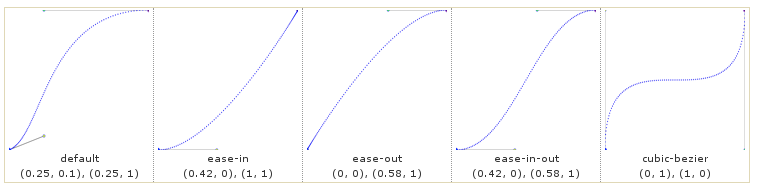
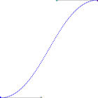

License
Copyright (c) 2012 SEBASTIAN GURIN. Permission is granted to copy, distribute and/or modify this document under the terms of the GNU Free Documentation License, Version 1.3 or any later version published by the Free Software Foundation; with no Invariant Sections, no Front-Cover Texts, and no Back-Cover Texts. A copy of the license is included in the section entitled "GNU Free Documentation License".
Read the Full License Text.
Table Of Contents
About this document
This is a Raphaël Js tutorial, a tutorial about easy drawing in web pages using the great JavaScript library Raphaël Js.
Since this is a JavaScript library tutorial, users should know the basics of JavaScript programming language. This document nevertheless, will try to be very detailed in advanced examples code.
Raphaël comes with an nice Reference where all its features are described with examples. Nevertheless, some features are not easy to understand to those not familiar with technologies like SVG or JavaScript and it is there where this tutorial wants to contribute.
The author of this tutorial is also the author of raphael4gwt a Raphaël porting to GWT (Java). The sources of this tutorial are currently being mantained at Raphaeljs tutorial project page. Feedback is very welcome.
For downloading the entire tutorial so you can access all the source code involved you can do:
svn co http://raphael4gwt.googlecode.com/svn/trunk/raphael4gwt firefox raphael4gwt/doc/raphaeltut/index.html
The tutorial was written entirely in HTML and contain a lot of live links to Raphaël reference page containing the exact reference definition., These links will open in a popup and show a certain function like Element.attr()
It also contain many inline examples that can be executed inside the same tutorial, so it is easy to see the code output result. Just click in the run button. For example, just click the "Run" button after the source code for running it.
Acknowledgments
First of all to the author of Raphaël Js, Dmitry Baranovskiy, for this great javascript library easy to use even for those not familiar with design or drawing.
Second I would like to thanks Charles Thomas, owner of the site http://www.irunmywebsite.com, a great place dedicated to raphaeljs, with pages made of graphics created with raphaeljs and with a lot of documentation, links and examples. Many examples of this tutorial were taken from there. I recommend readers to take a visit when searching to alternative material or documentation related to raphaeljs.
Introduction
Formally, from it's web site,
Raphaël Js Raphaël is a small JavaScript library by Dmitry Baranovskiy that should simplify your work with vector graphics on the web. If you want to create your own specific chart or image crop and rotate widget, for example, you can achieve it simply and easily with this library.
Raphaël ['ræfeɪəl] uses the SVG W3C Recommendation and VML as a base for creating graphics. This means every graphical object you create is also a DOM object, so you can attach JavaScript event handlers or modify them later. Raphaël’s goal is to provide an adapter that will make drawing vector art compatible cross-browser and easy.
While Raphaël Js is well documented on its reference, this document is a guide to drawing web pages with Raphaël Js for those users new to vector graphics, starting with easy examples through the advanced Raphaël features like animations, event handling and Raphaël extensions development.
Vector versus Bitmap Web Drawing Technologies
From this definition it is important to notice the following. There are two "main types" of technologies for drawing in web pages: vector based and bitmap based.
In vector based drawing, you draw shape elements inside a document, just like in html you have html elements inside an html document. Elements have parents,children and attributes that define them. Drawing technologies like Raphaël, SVG and VML are vector based technologies.
On the other hand, in bitmap based drawing we paint an array (matrix) of points with some color. There is no document or shape elements or attributes here- only a rectangle of NxM points each one with a color. HTML Canvas is a bitmap based drawing technology.
In the desktop, we can see the same vector vs. bitmap drawing technology duality, comparing vector oriented software like Corel Draw or Inskape with bitmap oriented software like photoshop or Gimp.
Each technology has its pros and cons. In practice, you wouldn't make a 3D game like DOOM or an image manipulation program in a vector based technology. On the other hand, it is much more simpler to draw presentations, documents, charts, and that kind of document on a vector based technology.
Getting Started
Raphaël is a JavaScript library for drawing on web pages. Basically one draw shapes of different types, likes circles, text, rectangles, images. Shapes support a large number of attributes that give the shape's form, like colors, transformations, content, borders, animations, (and many more).
Shapes are drawn in a paper, that is, a canvas element in the HTML document, where all shapes will live. It can be any number of papers in an HTML document and a shape belong to one paper.
In this section we will discuss how to create a paper for drawing.
Include raphael.js
The first requeriment for creating a paper is to load the file raphael.js in your html document like the following example. You can download the file raphael-min.js from http://raphaeljs.com/ and put it in the same folder of your HTML file:
<script type="text/javascript" src="raphael-min.js"></script>
<script type="text/javascript" src="http://github.com/DmitryBaranovskiy/raphael/raw/master/raphael-min.js"></script>
Creating a paper
Once we have included raphael.js script in our web page we can proceed to create a raphaël paper and draw on it. Creating a paper in raphael is accomplished by calling Raphael(...) functon as described in the reference.
The more flexible way of creating a paper, is to create it inside some HTML element of our web page. In the following example we show a complete HTML document that inserts raphael.js, has an HTML element with id "paper1" and last, creates a paper inside that element and draw a rectangle:
<!doctype html>
<html>
<head>
<meta http-equiv="content-type" content="text/html; charset=UTF-8">
<title>Raphaël tutorial - Getting Started - Example 1</title>
<script type="text/javascript" src="../raphael-min.js"></script>
</head>
<body>
<!-- the html element where to put the paper -->
<div id="paper1"></div>
<!-- a script that create's a paper and a rectangle -->
<script type="text/javascript">
var paper = Raphael("paper1", 500,500);
var rect1 = paper.rect(20,30,100,12).attr({fill: "orange"});
</script>
</body>
</html>
As you can see, once we include raphael.js, we have ceated a raphael paper and drawed a rectangle on it with JavaScript. You can run this individual example and checkout the source code in your browser for better understanding.
We will examine paper more in deep in Section "Paper".
Simple example
Now that we know how to create a paper, let's make our first drawing, commenting the code with explanations. Don't feel bad if you don't catch anything, all will be explained detailed in this toturial. Notice that after the example source code there is a "Run" button that you can use for running the example without having to leave the tutorial. You can run almost all example code of this tutorial this way.
/* create a paper - commented for Run */
/* var paper = Raphael("paper1", 400, 400); */
/* create an ellipse called ellipse1 */
var ellipse1 = paper.ellipse(110,80,120,42);
/* fill the rectangle with orange */
ellipse1.attr({"fill": "blue", "stroke": "yellow"});
/* create a text */
var text1 = paper.text(100,90, "Click me");
/* sets text font family and size */
text1.attr({"font-family": "fantasy", "font-size": 24});
/* group both the ellipse and the text in a single Set shape we call button1 */
var button1 = paper.set();
button1.push(ellipse1);
button1.push(text1);
button1.attr({cursor: "pointer"});
/* add a click handler */
button1.click(function(evt){
/* animate the ellipse - in two seconds its fill color and its stroke
* width will grow "bouncing". */
ellipse1.animate({fill:"red", "stroke-width": 20}, 2000, "bounce");
/* also animate the text - syncronized with the eliipse animation the
* text will grow "bouncing too" */
text1.animateWith(ellipse1, null, {"font-size": 60}, 2000, "bounce");
});
Now that we know how to create a raphaël's paper, in the following sections we will proceed to describe each of raphaël's supported shapes and shape's attributes. After that we will discuss more advanced topics like event handling and animations.
Note that, later, in all the examples code in this tutorial, for the sake of simplicity, we omit the paper creation and draw directly in a paper object. We assume you already have that object paper created like described here and go to the drawing directly.
Shapes
In RaphaëlJs drawing means creating shapes of different types and modify them in time to get the result you desire
In this section we will examine each of the shapes types supported by raphael like circles, rectangles, ellipses, paths, text, images, and more.
Shapes are always created by a paper object: we must ask a paper to draw a certain shape on it. That shape will of some type, have some attributes, and will belong to that paper. In the following example we ask the paper to create several shapes.
var rect1 = paper.rect(20,30,100,12).attr({fill: "orange"});
var ellipse1 = paper.ellipse(120,130,40,30).attr({fill: "red"});
var circle1 = paper.circle(160,50,40).attr({fill: "yellow"});
var path1 = paper.path("m10,10l30,40l150,80z").
attr({fill: "green", "stroke-width": 2});
var set1 = paper.set();
set1.push(rect1, ellipse1, circle1);
set1.attr({"stroke": "purple",
"stroke-width": 3, "stroke-dasharray": "."});
There are 7 types of shapes: rectangle, ellipse, circle, image, text, path and set each of one will be described on this section.
Shape's Attributes
It is important to notice that a shape is an object with attributes that define its current state. At any time one can ask a shape for some of its attribute's value, or change some attribute. Attributes are accessed using the shape's method attr(). For example, most shapes support the attribute fill with which you can change its (fill) color. This means that at any time we can ask a rectangle for its "fill" color using attr("fill"). Also we can use a JSON object for setting several attributes in one call. In the following example we set three attribute values fill, stroke and stroke-width in one call to attr():
paper.circle(100,100,60).attr({
fill: "red",
stroke: "rgb(200,100,77)",
"stroke-width": 5
})
While in this section we discuss each shape type, in Section Attributes we will discuss each attribute supported by raphaël shapes.
Shape's methods
A shape object is not only its attributes also it support methods for doing a lot of things, like register user event listeners like mouse click, animation, and many many more stuff. In
Rectangle
Rectangles are created using the paper's Paper.rect() method.
The following example show some rectangles Some rectangles
paper.rect(100,100,200,60).attr({
fill: "red",
stroke: "rgb(200,100,77)",
"stroke-width": 5
})
paper.rect(240,100,200,90,20).attr({
fill: "brown",
stroke: "rgb(100,200,77)",
"stroke-width": 5,
"stroke-dasharray": "."
})
You can change attributes x and y for moving the rectangle.
Circle
Circles are created using the paper's Paper.circle() method.
Ellipse
Ellipses are created using the paper's Paper.ellipse() method.
Image
Images are created using the paper's Paper.image() method. The following information is required to create the image shape: image source, width, height, x and y coords:
paper.rect(20,20,320, 200, 20);
var img1 = paper.image("images/tiled1.png", 200,100, 200, 100);
var img3 = paper.image("images/aminGif1.gif", 100,200, 200, 100);
var img2 = paper.image("images/tiled1.jpg", 100,100, 100, 110);
As the above example shows, PNG, JPG and GIF format are supported and in the case of GIF, animatimated gifs will work nicely (animated gifs shapes!).
Path
Paths are the most advanced kind of shapes. Paths are the most general and flexible kind of shape, not only other shapes like circles, rectangles, ellipses can be drawn using paths but also we can draw almost anything using paths. For example, as we will see, Raphaël uses paths internally for printing text of any font.
Raphael uses the same SVG path format and this is fully covered on the separate Path Raphael Type Section. Here we will only explain general aspects of path shapes.
We use the Paper.path() method for creating a path. The path method accept a string that define the path. In this section we will learn the basics of drawing a Path shape.
As we said a shape is what we can call "a sequence of path commands". A path command is a letter followed by some numbers comma or space separated.In the following example we draw a path that taht is a triangle and that consists on four commands: Move to 50,100 then draw a Line to 120,120, then draw a Line to 120,40 and then close the path (Z):
var p1 = paper.path("M10,100L120,120L120,40Z")
p1.attr({"stroke-width": 4, fill: "red"});
You can think of a path as a pencil that draws on the paper according to path commands in the string. As you may see, the "M50,100" command means "move to 50,100" and it tells the "pencil" to move to that coords without drawing. The "L120,120" means "draw a line to 120,120" and it will make the pencil to draw a line from current point (50,100) to specified point 120,120. Last the command "Z" will make the pencil to draw a line that closes the path, drawing a line from last point to origin.
The path type will be fully covered on Section Raphaël Types - Path.
/*Crisper lines with integers*/
var path_1 = paper.path('M100.0001 100.0001 V400.0001');
path_1.attr({stroke:'#FF0000', 'stroke-width': 2 ,'arrow-end': 'classic-wide-long'});
var path_2 = paper.path('M200 100 V400');
path_2.attr({stroke:'#FF0000', 'stroke-width': 2 ,'arrow-end': 'diamond-wide-long'});
/*Gradient on a path*/
path_3 = paper.path('M 246.078,121.508 C 246.078,113.387 235.324,105.602 216.187,99.859 C 197.05,94.117 171.097,90.891 144.031,90.891 C 116.964,90.891 91.0117,94.117 71.875,99.859 C 52.7383,105.602 41.9844,113.387 41.9844,121.508 C 41.9844,129.625 52.7383,137.414 71.875,143.152 C 91.0117,148.895 116.964,152.121 144.031,152.121 C 171.097,152.121 197.05,148.895 216.187,143.152 C 235.324,137.414 246.078,129.625 246.078,121.508z');
path_3.attr({fill: "90-#fff-#FFFF00:50%-#FF0000"});
/*Animated path*/
var arc = paper.path("M300 300, L300 200, A100,100,0,0,1,400,300,L 297 300").attr({stroke:'#0000FF', 'stroke-width':6});
arc.animate({path:"M300 300,L 300 200, A100,100,0,0,1,300,400, L300,300"},2000);
/*images can be used to fill paths*/
path_4 = paper.path('M 144.64285,71.290753 L 134.1333,73.039322 L 129.6157,82.688128 L 124.70509,73.23329 L 114.13251,71.918448 L 121.60713,64.326467 L 119.59052,53.865043 L 129.12071,58.62778 L 138.44694,53.477107 L 136.8623,64.01262 L 144.64285,71.290753 z').transform("S5");
path_4.attr({fill: "url(images/tiles.jpg)"});
/*Arc Examples*/
var arc2 = paper.path("M 60,70 L 60,20 A 50,50 0 0,1 68.7,20.8 Z");
var arc3 = paper.path("M 60,70 L 68.7,20.8 A 50,50 0 0,1 77.1,23.0 Z");
var arc4 = paper.path("M 68,65 L 85.1,18.0 A 50,50 0 0,1 118,65 Z");
var arc5 = paper.path("M 60,70 L 110,70 A 50,50 0 1,1 60,20 Z");
arc2.attr({fill:'#008000'});
arc3.attr({fill:'#FF0000'});
arc4.attr({fill:'#0000FF'});
arc5.attr({fill:'#C0C000'});
Text
Text shapes are created using paper's Paper.text() method.
We use paper.text(100,100,"a text") for creating a text shape at coords (100,100) with the text "a text". In the following examples we draw some text shapes and set varius raphael text related attributes to them:
var text1 = paper.text(230,120,"What is happiness?\nThe feeling that power \nincreases - that resistance \nis being overcome.\n Friedrich Nietzsche").
attr({"font-size": "32px", "font-weight": "800", fill: "yellow", stroke:"brown", "stroke-width": "3px"});
A note about text selection. In some browsers, like Google chrome, text() shapes are selectable by the user, like normal html text. You can verify this if selecting the text of previus example in chrome with the mouse. This can be undesired, but fortunately we can work around using jquery, and setting some CSS properties for disabling text selection by the user, like this:
var text1 = paper.text(230,120,
"What is happiness?\nThe feeling that power \nincreases - that resistance \nis being overcome.\n Friedrich Nietzsche").
attr({"font-size": "32px", "font-weight": "800", fill: "yellow", stroke:"brown", "stroke-width": "3px"});
$(text1.node).css({
"-webkit-touch-callout": "none",
"-webkit-user-select": "none",
"-khtml-user-select": "none",
"-moz-user-select": "none",
"-ms-user-select": "none",
"user-select": "none",
})
A note about font-family attribute for text. Any web developer knows the problem of fonts on web pages, the same applies here for text shape. As with any text in html pages, you can only use a font family supported by the client's browser. For example, use font-family="Lucida Casual" only if you are sure that the client's has the font that font installed in its system. If not, the text will printed using a default font like Arial or Times New Roman. There are some portable font family names defined in the CSS standar like "courier", "serif", "sans-serif", "fantasy" that will always be present. Also, as in CSS font-family you can set several font names as a "fallback" system like font-family=arial,sans-serif.
If you really need to show some text with a custom font use print() instead.
Multilingual support
You can put text using any language. Just make sure you use UTF-8 support in your HTML document. This done like this in your html markup :
<html>
<head>
<meta http-equiv="content-type" content="text/html; charset=UTF-8">
...
Then you can use safely UTF-8 strings in any desired language in your javascript code, for example in arabian:
paper.text(100,10,"أنا أحب القراءة كثيرا").attr({"font-size": 20});
Text with custom fonts
Raphael support a second way of making text very different than described in Section Text. alternatively to the normal text shapes created by Paper.text() method, the shapes created by Paper.print() method will render text using any font you like and generate a path shape.
RaphaelJs rely on the The Cufón technology that is used to generate JavaScript fonts, this is, javascript files, generated from TrueType fonts files, which can be used to draw text in an HTML document with the font definition. Let's say it is a font implementation for the browser. It usesSVG and VML for do the drawing, the same two technologies raphaeljs is based.
Basically the steps for being able to print text using a custom font in raphael.js are the followings:
- Get a font file, can be a true type (.ttf) file from your system, or you can download from internet. Make sure you have appropiate permissions over the TTF file.
- Go to the Cufon JavaScript Font generator. upload your ttf files, and do some configuration according to your usage. Clicking the bottom "Let's do this" button will let you download your JavaScript font file, which name generally ends with *.font.js.
- Include this javascript file in your html document, after you include raphael.js file:
<html>.... <head>... <script type="text/javascript" src="raphael-min.js"></script> <script type="text/javascript" src="samarkan.font.js"></script> </head> ..... </html>
var font1 = paper.getFont("samarkan normal");
paper.print(10,100,"Tim Bombadil", font1, 48);
paper.print(10,200,"Tim Bombadil", font1, 58).
attr({"stroke-width": 3, fill: "red", "stroke": "blue"});
The web site cufonfonts has a huge catalog of ready to use and free JavaScript cufon Fonts. So you can choose JavaScript fonts from there and skip steps 1 and 2.
can draw text using any font you like supporting major font formats like TrueType, OTF, etc. is used for rendering system fonts to vector paths. We use the Paper.print() method.
It is important to notice the following. The text() method crates a real text shape succeptible of having text related attributes like font-family, font-size, text-decoration. Nevertheless, shapes created with print() are paths, not text. So they do not support text related attributes like those.
In general, you will want to use print() for titles and small texts that need to be pretty formated. But when showing large amounts of text, text() is more appropriate and faster.
Also, because shapes generated with print() are in fact vector paths, we can work with it in ways that we couln'd with "normal" text shapes. For example TODO: example on text path align and text transform.
Set
In a first examination we can see that a set is a shape that contains other shapes, including other sets. Sets are useful when we want to group several shapes for accessing all together. For example, imagine
We can create a set using Paper.set as in the following example. There we group a bounch of shapes togheter in a set. Then we manipulate them together using the set.
var mouth = paper.rect(20,160,200,20).attr({"fill": "white"}),
eye1 = paper.circle(60,60,30).attr({"fill": "brown"}),
eye2 = paper.circle(160,60,30).attr({"fill": "brown"});
var face1 = paper.set([mouth, eye1, eye2]);
/* change all shapes of face1 */
face1.attr({"stroke-width": 4, "transform": "S0.8"});
/* clone the entire shape */
var face2 = face1.clone()
face2.data("name", "face2");
face2.attr({"transform": "t200,100R40,200,200"});
/* now iterate over each set's shape using foreach and animate each of them... */
var action1 = function(){
face2.forEach(function(shape, index){
shape.animate({"transform": "..r-120, 200,200"}, 5000, "bounce");
})
};
setTimeout(action1, 500);
So a set is a logical container for shapes. setting attributes or register event listeners in a shape will result on that action being executed on each of the contained shapes. However be aware of the following consequence. Because a set is only a logical shape container, it has no attributes itself, so asking a set for its "fill" attribute value like aSet.attr("fill") is undefined and the previus will return undefined.
Also notice that in the previous example we iterated though all shaps contained by a set using forEach() method. We passed a function function(shape, index){...} and inside we perform some action over the set's shape being iterated. The index parameter correspond to the iterated shape's index in that set.
Shape's methods and properties
All shapes support common methods each of them will be described here in detail.
animate()
All shapes support the methods animate() and animateWith() for animating its attributes. Animation is explained in its own section.
Event handling
Raphael support an easy to use event handling system so you can easily register event listeners, for example mouse clicks, on shapes. Event handling have its own section Events.
Shape's Methodsid
Unique id of the element. Especially usesful when you want to listen to events of the element, because all events are fired in format <module>.<action>.<id>. Also useful for Paper.getById method.
node
Shapes support the node property taht is a reference to the DOM object so you can manipulate shapes using third party javascript libraries. For example:
/* draw a circle at coordinate 10,10 with radius of 10 */
var c = paper.circle(10, 10, 10);
c.node.onclick = function () {
c.attr("fill", "red");
};
Be very carefull when using this property as you may break raphaeljs internals. Only use it when really neccesary, when you cannot make something in raphael and you need another framework help for accomplish some task.
clone()
The clone() method will return an identical shape than the target, with the exception that event listeners won't be cloned:
var r1 = paper.rect(100,100,100,100).attr({fill: "red"});
r1.click(function(){alert("clicked");});
r1.clone(true).attr({transform: "t120,0"});
In the case fo sets it will return a new set with all members cloned as well, like in the following example:
toBack() and toFront()
When two shapes are overlapped, one will remain on top of the other. As we create new shapes in a paper, newer ones will be on top of older ones. We use the methods toBack() and toFront() for changing this z-index order. In the following example, two rectangles overlapp. Because the red rectangle was drawer later, it wil remain entirely visible. If you click it we will call toBack() on it and the blue one will be visible as a consequence:
paper.text(100,20,"click the red rectangle");
var r1 = paper.rect(60,70,100,130).attr({fill: "blue", "stroke-width": 4});
var r2 = paper.rect(100,130,120,100).attr({fill: "red", "stroke-width": 4});
r2.click(function(){
this.toBack();
})
show() and hide()
All shapes support methods show() and hide() for hiding and showing shapes. Hidden shapes are not removed from the paper, only hidden, as in CSS's "display: none".
The following is an example that use these two functions:
var cx=[240,400,320];
var cy=[160,160,300];
var r = paper.circle(cx[0], cy[0], 160).attr({fill:'#FF0000'}).
click(function () { g.hide();b.show(); });;
var g = paper.circle(cx[1], cy[1], 160).attr({fill:'#00FF00'}).
click(function () { b.hide();r.show(); });;
var b = paper.circle(cx[2], cy[2], 160).attr({fill:'#0000FF'}).
click(function () { r.hide();g.show() });;
paper.text(20,400,'Click on a circle.').attr({fill:'#000000',
'font-size':24, 'stroke-width':1 ,'text-anchor':'start'});
prev and next properties
Remember we said that newer shapes will be on top of older ones? Well we can iterate throw all paper's shape's in that order using shape's properties prev and next. In the following example do exactly that using also paper's properties bottom and top:
sShape's Attributes
A shape is an object with attributes that define its current state. At any time one can ask a shape for some of its attribute's value, or change some attribute. Attributes are accessed using the shape's method attr() method. For example, all shapes have the attribute fill with which you can change its (fill) color. This means that at any time we can ask a rectangle for its "fill" color using attr("fill"). Also we can paint a shape red using rect1.attr({"fill": "red"}); and/or change it using. Another example are text shapes that have an text attribute that can be used for getting or setting the text. In this case, only shapes of type text will understand this attribute: for a rectangle the text attribute has no meaning and it will be ignored.
Some attributes have a very simple purpose, like text (the text of a text shape). But there are other attributes that support different formats or have more than one purpose. For example, the fill attribute may serve both for filling a shape with a color, or filling a shape with a gradient, or filling a shape using an tiled image. We use the same fill attribute, but using different format for the value for archieving different "filling" porpuses.
In this section we will describe each supported attribute emphasising the more complex ones, alphabetically. The following table contains a summary of each attributes (taken from rpahael reference).
- arrow-endstringarrowhead on the end of the path. The format for string is
<type>[-<width>[-<length>]]. Possible types:classic,block,open,oval,diamond,none, width:wide,narrow,midium, length:long,short,midium. - clip-rectstringcomma or space separated values: x, y, width and height
- cursorstringCSS type of the cursor
- cxnumberthe x-axis coordinate of the center of the circle, or ellipse
- cynumberthe y-axis coordinate of the center of the circle, or ellipse
- fillstringcolour, gradient or image
- fill-opacitynumber
- fontstring
- font-familystring
- font-sizenumberfont size in pixels
- font-weightstring
- heightnumber
- hrefstringURL, if specified element behaves as hyperlink
- opacitynumber
- pathstringSVG path string format
- rnumberradius of the circle, ellipse or rounded corner on the rect
- rxnumberhorisontal radius of the ellipse
- rynumbervertical radius of the ellipse
- srcstringimage URL, only works for Element.image element
- strokestringstroke colour
- stroke-dasharraystring[“”, “
-”, “.”, “-.”, “-..”, “.”, “-”, “--”, “- .”, “--.”, “--..”] - stroke-linecapstring[“
butt”, “square”, “round”] - stroke-linejoinstring[“
bevel”, “round”, “miter”] - stroke-miterlimitnumber
- stroke-opacitynumber
- stroke-widthnumberstroke width in pixels, default is '1'
- targetstringused with href
- textstringcontents of the text element. Use
\nfor multiline text - text-anchorstring[“
start”, “middle”, “end”], default is “middle” - titlestringwill create tooltip with a given text
- transformstringsee Element.transform
- widthnumber
- xnumber
- ynumber
Each attribute type will be explained individually in the following sections.
Arrow-end and arrow-start
Attributes arrow-end and arrow-start add an arrow at the endo and/or start of a path. The path must by not closed, this is, not ending in the "Z" path command.
The format of these two strings is <type>[-<width>[-<length>]]. Possible types are classic, block, open, oval, diamond, none. Possible values for width are: wide, narrow, midium. And possible values for length are: long, short, midium.
The following is a simple example with a path and these two attributes.
var path = paper.path("m100,20l200,150t120,120t40,120");
path.attr({"stroke": "brown",
"stroke-width": 3,
"arrow-end": "block-wide-long",
"arrow-start": "oval-narrow-midium"});
clip-rect
What happens if an image is larger than its containing element? - The clip property lets you specify the dimensions of an absolutely positioned element that should be visible, and the element is clipped into this shape, and displayed. Comma or space separated values: x, y, width and height
var e = paper.ellipse(100,100,70,50);
e.attr({"stroke": "brown", "stroke-width": 3, "clip-rect":"20,30,120,60"});
cursor
CSS type of the cursor:
| Value | Description |
|---|---|
| auto | Browser default cursor (often an arrow). This is default |
| crosshair | Crosshair cursor |
| default | Platform-depended default cursor (often an arrow) |
| e-resize | East arrows. Indicates that an element is resizable |
| help | Arrow with question mark, indicating that help is available |
| move | Crossed arrows, indicating that something can be moved |
| n-resize | North arrows. Indicates that an element is resizable |
| ne-resize | North-east arrows. Indicates that an element is resizable |
| nw-resize | North-west. Indicates that an element is resizable |
| pointer | Normal hand |
| s-resize | South arrows. Indicates that an element is resizable |
| se-resize | South-east arrows. Indicates that an element is resizable |
| sw-resize | South-west arrows. Indicates that an element is resizable |
| text | The cursor indicates text |
| url | The URL of a cursor file to be used. Tip: Always define a generic cursor at the end of the list in case none of the url-defined cursors work |
| w-resize | West arrows. Indicates that an element is resizable |
| wait | Hourglass or watch, indicating that the program is busy |
cx and cy
The x and y coordinate of the center of the circle, or ellipse.
fill
The attribute fill serves to fill the inner area of a shape. It can be filled with a solid color, a gradient with two or more colors, or with a tiled image.
Color fill
The fill attribute can be a color and many color formats are supported:
paper.ellipse(100,100,90,40).attr({fill: "yellow"});
paper.rect(200,100,90,40).attr({fill: "#4422ff"});
paper.path("m200,200l280,200l290,290z").attr({fill: "rgb(213,111,5)"});
paper.ellipse(340,100,90,40).attr({fill: "hsb(0.5,0.9,0.9)"});
In Section Type Color we discuss the color datatype in raphael detailed.
Gradients
You can use the fill attribute to set a color gradient for filling. A rich number of gradients types are supported which are descripbed in Raphael types - Gradients.
Images
We can also fill a shape using an image. If the image is smaller than the shape area, it will be repeated both in x and y directions (the same as in CSS's background-repeat: repeat-xy). We can only specify the image, no position or repeat parameters are supported. The only other parameter supported is fill opacity.
paper.circle(100,100,100).attr({
fill: "url(images/tiled1.jpg)",
"stroke-width": "3px"});
paper.ellipse(250,100,80,120).attr({
fill: "url(images/tiled1.jpg)"});
fill-opacity
Events
Raphaël supports listening for user events. For example if we want to show an alert dialog when the user clicks a rectangle we use:
paper.text(20,100,"click the rectangle please").attr({"font-size": "18px"});
var rectangle = paper.rect(150,100,100,130).attr({fill: "red"});
var clickHandler = function(){
alert("clicked");
};
rectangle.click(clickHandler);
Also for each event type, we can unregister the function handler. In the case of the previus example this would be:
rectangle.unclick(clickHandler);
In this section we will describe each event type.
Mouse Events
Raphael support the following events type related to mouse:
| Event type | meaning | Function Reference | Example |
| click | the shape was clicked | click() | |
| click | the shape was double clicked | dblclick() |
paper.text(100,10,"dmlclicking the ellipse for moving it")
var e1 = paper.ellipse(100,100,160,120).attr({fill: "red"});
/* move according to click coords on dblclicked */
e1.dblclick(function(e){
e1.attr()
});
|
Normalizing events.
As web page programmers know, there are big incompatibilities between different browsers in the events object API. This is why JavaScript toolkits like jQuery, YUI, etc. where created.
The following is an example about how to detect if the user is pressing some key like control or alt while he is moving or clicking the mouse.
var r = paper.rect(100,100,100,80).attr({fill: "red"});
r.click(function(e){
/* first normalize the event object with jquery */
e = $.event.fix(e);
e.preventDefault();
alert(e.which+", "+e.shiftKey+", "+e.altKey+", "+e.metaKey+", "+e.ctrlKey);
});
Mouse Wheel
What about mousewheel events? Well it is possible to listen to mouise wheel events in the paper, using the jquery's mouse wheel extension by Brandon Aaron
For that you will need jquery.js (like for keyboard events) and also the jquery.mousewhell.js file that can be downloaded from here.
In the following example we
paper.text(100,10, "use you moue wheel under \nthe circle for chaning rx");
var e1 = paper.ellipse(100,100,40,40).attr({fill: "red"});
$(e1.node).bind('mousewheel', function(event, delta) {
e1.attr({rx: e1.attr("rx")+delta});
event.preventDefault();
});
Note that like other rapheel mouse events, mousewheel won't be fired in shapes without a fill attribute. Notice that in that example, we needed to call event.PreventDefault(), if not the tutorial contents will be scrolled when you use the mouse-wheel.
Note also that you can also register the mousewheel listener in the paper itself (and not an individual shape. Instead using aShape.node, we use paper.canvas:
paper.text(100,10, "use you moue wheel under \nthe circle for chaning rx");
var e1 = paper.ellipse(100,100,40,40).attr({fill: "red"});
$(paper.canvas).bind('mousewheel', function(event, delta) {
e1.attr({rx: e1.attr("rx")+delta});
event.preventDefault();
});
Touch Events
Keyboard Events
Raphaël do not support keyboard related events. You can use the HTML Events DOM JavaScript API like in any common web page. I recommend using some javascript library like jquery or yui for doing event stuff on html documents mainly because it will normalize the API between different browsers. This only apply for key events: the other mouse related events we saw like click(), drag() etc are managed by raphaël and do not need you to use any other javascript library.
In the following example we use jquery for register an key event listener and moving a shape with arrow keys. You can run the example alone here. Remember that jquery.js file must be included in this example.
paper.text(220,20,"please press the arrow keys for\n shaping the ellipse").attr({"font-size": "22px"});
var ellipse = paper.ellipse(200, 200, 100, 100).attr({fill: "orange"});
$(document).keydown(function(event) {
/* since we are using jquery, the event is already normalize */
var arrowKeys = {"left": 37, "up": 38, "right": 39, "down": 40};
if(event.keyCode == arrowKeys["left"]) {
ellipse.animate({rx: ellipse.attr("rx")-40}, 1000, "bounce");
}
else if(event.keyCode == arrowKeys["up"]) {
ellipse.animate({ry: ellipse.attr("ry")+40}, 1000, "bounce");
}
else if(event.keyCode == arrowKeys["right"]) {
ellipse.animate({rx: ellipse.attr("rx")+40}, 1000, "bounce");
}
else if(event.keyCode == arrowKeys["down"]) {
ellipse.animate({ry: ellipse.attr("ry")-40}, 1000, "bounce");
}
/* we want to prevent document scrolling when pressing the arrows: */
event.preventDefault();
});
Here we are registering a global key listener for all the key events that occurs in the web page. If you need individual key listeners, one for each paper in your HTML document, you should create focusable one hidden HTML element like <input type="text"> or <textarea> for each of your papers, and give focus programatically when neccessary. With jquery this can be accomplished with the focus() method.
Eve
This is current an unstable API and several features described here are are not currently supported by raphael.js, yet. For running these examples you need to use the same raphael.js file as this tutorial, this is raphael-min.js.
RaphaelJs event management is based on a tiny event helping JavaScript library called eve. In this section we will discuss how to take advantadge of eve when working with events in raphaeljs.
Eve is a small custom event managment library with which you can register and fire events types working with named events. You name your events like "class1.event1.id1" and then can reference (for listening) using regular expressions like eve.on("class1/*/*", function(){...}); . Just take a look at eve example.
In eve, all events belong to a type, and each type of events are identified with a name. In eve, names have a special syntax, separating words with "." or with "/" characters. All Raphaël events start with the name prefix "raphael.". For example, "raphael.*" will reffer to all events, of any type on any raphael shape, "raphael.event.click.*" refers to all events of type click on any element, and "raphael.event.click.123" reffers to click events on the shape with id 123. As you can see we can use wildcards to express that we want all the elements on a category. For example, "raphael.event.*.123" reffers to all types of events that occurs on shape with id 123.
Raphaeljs uses eve and exposes some type of events that are not "accessible" using the normal raphaeljs API. In the case of raphael this is interesting, it gives a lot of flexibility that raphaeljs event api do not give. For example, we can trigger events programatically, or listen for an event only once. Also using eve we can access event types not supported bu the raphaël api, for example, notifications of stage change of an animation, attribute change notifications and other. So in conclusion, dominating eve will allow you tu fully dominate the event managment system under raphaeljs.
A common eve usage scenario: Listen for attribute change events:
var rect1 = paper.rect(10,10,100,120,5).attr({fill: "#ededff", "stroke-width": 4});
rect1.click(function(ev){
rect1.attr({fill: rt.randomColor()});
});
//we want to be notified each time the fill color of rect1 is modified:
eve.on("raphael.attr.fill."+rect1.id, function(shape, attributeName, newVal){
alert("attribute "+attributeName+" of shape "+this.type+", id: "+this.id+" to be changed to value: "+newVal);
});
The following table contains interesting events supported by raphael shapes.
| Event Name | Description | Handler function context object | handler function accepted parameters |
| raphael.attr.attrName | attribute change event - notifications just before an attribute change. | the shape being modified | [shape, attributeName, attributeValue] |
| raphael.drag.over | the drag over event | the element being dragged | single param : element over which something is being dragged |
| raphael.drag.start | the drag start event | abs x, abs y, mouse event | |
| raphael.drag.end | the drag end event | the element being dragged & dropped | single param: the element being dragged & dropped |
| raphael.drag.move | the drag move event | element being dragged | dx, dy, x, y, mouse event |
| raphael.anim.finish | the animation finnish | the animated shape | |
| raphael.anim.pause | animation pause | the animated shape | |
| raphael.anim.resume | animation resume | the animated shape | |
| raphael.anim.stop | animation stop | the animated shape | |
| raphael.anim.start | animation start | the animated shape | |
| raphael.anim.frame | animation frame passed | the animated shape | the animation object |
| raphael.data.get | a shape data was getted | ||
| raphael.data.set | a shape data was setted | ||
| raphael.remove | raphael paper was removed | a paper context object | no params |
The raphael.js file that comes with raphael4gwt and with this tutorial was modified by the author of this tutorial for supporting more interesting raphael events using the eve interface. In my raphael.js TODO: link, I added also the following:
| Event Name | Description | Handler function context object | handler function accepted parameters | |
| raphael.elementCreate.type.id | a new shape was created in a paper | the new shape. Remember you can use aShape.type, aShape.paper for obtaining its type and owner paper. | [shapeType, shapeAttributes] - shape type (string) and shape attributes (object) | |
| raphael.elementRemove.type.id | a shape was removed from a paper. | the removed shape | [paper, shapeId] | |
| raphael.event.eventType.id | raphael events notification with eve. Only soft events available: ["click", "dblclick", "mousedown", "mouseout", "mouseup"] | the event target shape | event type, x coord, y coord, event object and target element |
Attribute Change Event
The first interesting thing that we can do whit eve is to listen for a certain attribute change of a shape. For that we use the eve event names "raphael.attr.*". For example if we want to listen when the "fill" attributte of a shape with id 123 changes, we use the event "raphael.attr.fill.123". Another example, for listening when the attribute "stroke" change but this time on ANY shape we use the event "raphael.attr.stroke.*". This is shows in the following example:
var rect1 = paper.rect(50,50,100,60).attr({fill: "black", stroke: "pink"});
/* register for attribute fill change event on a single shape */
eve.on("raphael.attr.fill."+rect1.id, function(newVal) {
alert("fill changed for rect1 current value: "+this.attr("fill")+" - new value: "+newVal);
});
/* register for attribute stroke change event on all shapes */
eve.on("raphael.attr.stroke.*", function(newVal) {
alert("stroke changed some shape id: "+this.id+" - current value: "+this.attr("stroke")+" - new value: "+newVal);
});
/* calling attr() will trigger the two listeners */
rect1.attr({fill: "red", stroke: "blue"});
As with any eve event, we can also fire attribute change events programtically. Triggering an attribute change event on a shape will cause this shape to change the attribute just like configured in the event object:
var r1 = paper.rect(100,100,100,30,4), c1 = paper.circle(100,100,40);
/* alert(rt.dump(Raphael._Paper)); */
alert("trigger an attribute change event to all shapes");
eve("raphael.attr.fill.*", "fill", "blue");
alert("trigger an attribute change event to an specific shape");
eve("raphael.attr.stroke-width."+c1.id, "stroke-width", 10);
Shape Mouse Event
Raphael will manage the following mouse events: "click", "dblclick", "mousedown", "mouseout", "mouseup" mouse events. For example, for listening or trigger mouse click events, you should use the eve event named "raphael.event.click". In the following example, we register a mouse click event listener. Also we trigger a click event programatically:
var c = paper.circle(100,100,100).attr({fill: "red"});
var flag=0;
/* register a normal click handler */
c.click(function(evt){
if(evt.clientX > 0)
flag++;
});
/* registetr a click handler for listening on clicks on the circle using eve */
eve.on("raphael.event.click."+c.id, function(eventType, x, y, evt){
if(evt.clientX > 0 && this.type=="circle")
flag++;
});
/* registetr a click handler for listening on clicks on ALL the shapes using eve */
eve.on("raphael.event.click.*", function(eventType, x, y, evt){
if(evt.clientX > 0 && this.type=="circle")
flag++;
});
/* listening to any type of event that occurs on the circle */
eve.on("raphael.event.*."+c.id, function(eventType, x, y, evt){
if(evt.clientX > 0 && this.type=="circle")
flag++;
});
/* trigger a click event on a shape */
var evt = {clientX: c.getBBox().x+50, clientY: c.getBBox().y+50};
eve("raphael.event.click."+c.id, c, "click" , evt.clientX, evt.clientY, evt);
alert(flag==4 ? "ALL OK" : "ERROR");
As with other eve managed events, we can listen for an specific event to happen on any shape. For example, for listening ANY dblclick event that happes in ANY shape, we use eve("raphael.event.click.*", function)eve()
A this time this is not yet included in official raphael.js versions. Until that, you must use the same tutorial raphael-min.js file.
Also, mouse events that imply heavy notification amount, like mousemove, won't be managed by eve.
elementCreate and elementRemove events
Raphael also manage events types elementCreate and elementRemove with eve. These events indicate a shape creation or a shape removal from a paper, respectively In the following example we will register for shape creation and shape removal and also will trigger shape creation and shape removals programatically using eve.
var flag=0;
/* listen for shape creation */
eve.on("raphael.elementCreate.*", function(shapeType, shapeAttrs) {
var newShape = this;
flag++;
});
/* create a shape - will trigger elementCreate */
var c = paper.circle(100,100,100).attr({fill: "red"});
/* triggers an shape creation event programatically - will create a new shape */
eve("raphael.elementCreate.*", {}, paper, "ellipse", {cx: 100, cy: 100, rx: 50, ry: 70, fill: "yellow"});
/* listening for shape removal - elementRemove */
eve.on("raphael.elementRemove.*", function(evt) {
var removedShape = this;
flag++;
});
/* trigger a shape removal event elementRemove */
eve("raphael.elementRemove."+c.id, {}, paper, c.id);
alert(flag==3 ? "ALL OK" : "ERROR");
As you can see we were able not only to detect when shapes are created or removed from its paper using eve events named "elementCreate" and "elementRemove". Also we were able to trigger these events programatically which results in new shape created or shapes removed, respectively.
Synchronizing papers using eve events elementCreate/elementRemove
An interesting usecase of eve events elementCreate and elementRemove is being able to automatically synchronize 2 papers. This for example in the problem of an strategy games like civilization, warcraft, etc in which you have a main paper view with your game units and cities / buildings and another small minimap paper that contains the same information. The minimap is small and when you click on it it will change your current position in the main game paper. This in practice can be done with two raphael papers with the same content but with diferent sizes and viewboxes (see paper.setViewbox()). It would save us a lot of work if we can synchronize the two papers so changes made in one reflect in the oher automatically. Changes here means adding or removing shapes and changing shapes attributes.
A gallery of usecase examples
The following try to be a self explanatory code that triggers and handle mouse events and attribute change events using eve :
var rect = paper.rect(50, 40, 50, 50).attr({fill: 'red'});
alert("change a shape color triggering raphael.attr.fill.* event");
eve("raphael.attr.fill."+rect.id, rect, "blue", "fill");
//creating a shape triggering elementCreate event
alert("creating a shape triggering elementCreate event ");
paper.setStart();
eve("raphael.elementCreate.*", {}, paper, "ellipse", {cx: 100, cy: 100, rx: 50, ry: 70, fill: "yellow"});
var shape1 = paper.setFinish();
//remove a shape triggering elementRemove event
alert("remove a shape triggering elementRemove event");
eve("raphael.elementRemove.*", {}, paper, rect.id);
//registering click handlers for clicks events on any shape using raphael.event.click.* event
eve.on("raphael.event.click.*", function(el, x, y, evt){
alert("shape "+this.type+" clicked at coords: "+x+", "+y);
});
paper.text(100,100, "click on any shape");
//register aany attribute change listener for a certain shape
var circle1 = paper.circle(100,180,100).attr({fill: "brown", opacity: 0.7});
eve.on("raphael.attr.*."+circle1.id, function(shape, attributeName, newVal){
alert("attribute "+attributeName+" of shape "+this.type+" to be changed to value: "+newVal);
});
alert("attribute change listening");
circle1.attr({fill: "blue"}); //triggers the above event raphael.attr.*.circle1Id listener
alert("making attribute changes triggeringing raphael.event.*, \nIn this case trigger it for all shapes")
eve("raphael.attr.fill."+circle1.id, circle1, circle1, "fill", "pink"); //filling a shape triggerint the event raphael.raphael
Define custom events with eve
Advanced Events
This section describe how event listeners are stored internally. A shape stores its event listeners in an array property "events". Each member of this array is an object with informration about a certainv event registration call in order. This is each time you call click() dblclick() etc functions you push a new object n the events array property. The objects with event registration information have the format {f, name, unbind} where f is the funciton handler registered by the user, name the type name of the event like "click", "dblclick", etc and the unbind being a function for unregistering the listener.
var r = paper.rect(10,10,20,120,4).attr({fill: "blue"});
r.click(function(evt){
alert("click detected: "+evt.clientX+", "+evt.clientY);
});
r.click(function(evt){
alert("click detected also here !"+evt.clientX+", "+evt.clientY);
});
/* now suppose that for one reason we need to search all mouse event listeners and perhaps notify some all of this programatically: */
for(var i = 0; i<r.events.length; i++) {
if(r.events[i].name=="click") {
r.events[i].f({clientX: 50, clientY: 30});
}
}
Only use this if really necessary, this is not part of the API and you should only manuipulate the events array if you knmow what you are doing.
Function Throttle
Some mouse events supported by Raphaël, like mousemove, drag-move or hover are fired each time the mouse pointer moves. If in your event handler functions you must perform some expensive operation, and since javascript is single threaded, it may happen that the event handler function to take more time than the lapsus between events and as a result an annoying kind of flickerng may appear.
For example, in the following example (used for explaining path cubic Bézier path), you can drag the blue points that are the control points of the cubic bézier path, and see how changing them will affect the shape. Some calculation is required to redraw the path when the user is dragging. Try to do the mouse draggin fast and (if you are not in a super computer), you will see some undesiderable flickering:
The origin of the flickering is that the time required to perform the calcluation inside the drag event handler is high, and so and it will freeze the GUI until it is done. At that time, the mouse can be far away of prevois dragging point.
There is a way of avoiding this problem, and it is using what it is called "function throttle". We will use an auxiliar function that will "throttle" our event handler functions, so they are not called more than once in a given lapsus of time. The throttle function is taken from here.. It do not require any javascript toolkit at all and this is the source:
function_throttle : function( delay, no_trailing, callback, debounce_mode ) {
// After wrapper has stopped being called, this timeout ensures that
// `callback` is executed at the proper times in `throttle` and `end`
// debounce modes.
var timeout_id,
// Keep track of the last time `callback` was executed.
last_exec = 0;
// `no_trailing` defaults to falsy.
if ( typeof no_trailing !== 'boolean' ) {
debounce_mode = callback;
callback = no_trailing;
no_trailing = undefined;
}
// The `wrapper` function encapsulates all of the throttling / debouncing
// functionality and when executed will limit the rate at which `callback`
// is executed.
function wrapper() {
var that = this,
elapsed = +new Date() - last_exec,
args = arguments;
// Execute `callback` and update the `last_exec` timestamp.
function exec() {
last_exec = +new Date();
callback.apply( that, args );
};
// If `debounce_mode` is true (at_begin) this is used to clear the flag
// to allow future `callback` executions.
function clear() {
timeout_id = undefined;
};
if ( debounce_mode && !timeout_id ) {
// Since `wrapper` is being called for the first time and
// `debounce_mode` is true (at_begin), execute `callback`.
exec();
}
// Clear any existing timeout.
timeout_id && clearTimeout( timeout_id );
if ( debounce_mode === undefined && elapsed > delay ) {
// In throttle mode, if `delay` time has been exceeded, execute
// `callback`.
exec();
} else if ( no_trailing !== true ) {
// In trailing throttle mode, since `delay` time has not been
// exceeded, schedule `callback` to execute `delay` ms after most
// recent execution.
//
// If `debounce_mode` is true (at_begin), schedule `clear` to execute
// after `delay` ms.
//
// If `debounce_mode` is false (at end), schedule `callback` to
// execute after `delay` ms.
timeout_id = setTimeout( debounce_mode ? clear : exec, debounce_mode === undefined ? delay - elapsed : delay );
}
};
// Return the wrapper function.
return wrapper;
},
Now let me explain how it works. Suppose you want to register a click event handler but you want to be called no more than once every second. So if you make click several times in a second, the handler will be called only once. We need function throttling for this and it is shows in the following example how to do it.
/* the same function as before but without comments */
function function_throttle( delay, no_trailing, callback, debounce_mode ) {
var timeout_id,
last_exec = 0;
if ( typeof no_trailing !== 'boolean' ) {
debounce_mode = callback;
callback = no_trailing;
no_trailing = undefined;
};
function wrapper() {
var that = this,
elapsed = +new Date() - last_exec,
args = arguments;
function exec() {
last_exec = +new Date();
callback.apply( that, args );
};
function clear() {
timeout_id = undefined;
};
if ( debounce_mode && !timeout_id ) {
exec();
}
timeout_id && clearTimeout( timeout_id );
if ( debounce_mode === undefined && elapsed > delay ) {
exec();
} else if ( no_trailing !== true ) {
timeout_id = setTimeout( debounce_mode ? clear : exec, debounce_mode === undefined ? delay - elapsed : delay );
}
};
return wrapper;
};
/* now the example */
var status1 = paper.text(200, 30, "0");
var status2 = paper.text(200, 60, "0");
var c1 = paper.circle(100,200,40).attr({fill: "red"});
var c2 = paper.circle(200,200,40).attr({fill: "blue"});
/* install a normal click handler to the red circle */
var handler1 = function(evt) {
status1.attr({text: parseInt(status1.attr("text"))+1});
};
c1.click(handler1);
/* install a throttled click handler for blue circle, so it will be called no more than one time in between 1 second */
var handler2 = function(evt) {
status2.attr({text: parseInt(status2.attr("text"))+1});
};
c2.click(function_throttle(1000, false, handler2, true));
Try to click both rectangles quickly, and se the results. As you may see, the red rectangle is behaving normal, the counter increments on each click. But the blue rectangle, that has the click handler throttled by 1 second, will only increment its counter a single time in a second. (try to double click it to see what i'm talking about).
Now let's fix the previus example of cubic bezier curves using function throttle, so the drag event won't be called more than once in 300ms and see if it performs better than our original example:
/* the same function as before but without comments */
function function_throttle( delay, no_trailing, callback, debounce_mode ) {
var timeout_id,
last_exec = 0;
if ( typeof no_trailing !== 'boolean' ) {
debounce_mode = callback;
callback = no_trailing;
no_trailing = undefined;
};
function wrapper() {
var that = this,
elapsed = +new Date() - last_exec,
args = arguments;
function exec() {
last_exec = +new Date();
callback.apply( that, args );
};
function clear() {
timeout_id = undefined;
};
if ( debounce_mode && !timeout_id ) {
exec();
}
timeout_id && clearTimeout( timeout_id );
if ( debounce_mode === undefined && elapsed > delay ) {
exec();
} else if ( no_trailing !== true ) {
timeout_id = setTimeout( debounce_mode ? clear : exec, debounce_mode === undefined ? delay - elapsed : delay );
}
};
return wrapper;
};
var p1 = {x: 100, y: 100}, p2 = {x: 300, y: 300};
var cp1 = {x: 150, y: 100}, cp2 = {x: 150, y: 300};
function buildCurve(p1, p2, cp1, cp2) {
return "M"+p1.x+","+p1.y + /* move to p1 */
"C" + /* a cubic Bézier curve defined by */
cp1.x+","+cp1.y + /* first control point cp1 */
","+cp2.x+","+cp2.y + /* second control point cp2 */
","+p2.x+", "+p2.y;
};
function updatePath() {
path.attr({path: buildCurve(p1, p2, cp1, cp2)});
status.attr({text: "p1: "+p1.x+","+p1.y+"\n"+
"p2: "+p2.x+","+p2.y+"\n"+
"cp1: "+cp1.x+","+cp1.y+"\n"+
"cp2: "+cp2.x+","+cp2.y});
};
var path = paper.path(buildCurve(p1, p2, cp1, cp2));
var pointRadius = 5;
/* and now draw the p1 and p2 points in blue */
var p1Shape = paper.circle(p1.x, p1.y, pointRadius).attr({fill: "red"});
var p2Shape = paper.circle(p2.x, p2.y, pointRadius).attr({fill: "red"});
/* and draw control points in blue */
var cp1Shape = paper.circle(cp1.x, cp1.y, pointRadius).attr({fill: "blue"});
var cp2Shape = paper.circle(cp2.x, cp2.y, pointRadius).attr({fill: "blue"});
var status = paper.text(200,10,cp1Shape.attr("cx")+"");
var throttleLapsus = 100;
cp1Shape.drag(
function_throttle(throttleLapsus, function(dx, dy){ /*move*/
cp1.x=this.ox+dx;
cp1.y=this.oy+dy;
this.attr({cx: cp1.x, cy: cp1.y}); /*visual feedback*/
updatePath();
}),
function(x, y){ /*drag start*/
this.ox=this.attr("cx");
this.oy=this.attr("cy");
}, function(){ /*ends*/
}
);
cp2Shape.drag(
function_throttle(throttleLapsus, function(dx, dy){ /*move*/
cp2.x=this.ox+dx;
cp2.y=this.oy+dy;
this.attr({cx: cp2.x, cy: cp2.y}); /*visual feedback*/
updatePath();
}),
function(x, y){ /*drag start*/
this.ox=this.attr("cx");
this.oy=this.attr("cy");
}, function(){ /*ends*/
}
);
An observed behaviur is that when throttling event handler functions like this, is much less expensive in terms of CPU computations than the normal event handler functions.
function inBetween()
In last section, with function throttle, we were able to regulate how much we want to be notified. This is we can say "hey! notify me when X happens once in a time lapsus of T milliseconds". Now we want kind of the opposite, "hey! notify me when X happens at least N times in a time lapsus of T milliseconds".
Think on the problem of being notified when a "tripple click", "cuadrupple click", and in general "nth-click". More specifically we need to be notified when three clicks occurs in a lapsus of T milliseconds. This section try to explay how to do that using the function inBetween(). We will use it similarly as we used function_throttle in last section.
In the following example we first give the code of function inBetween() and then we write a small test that show some raphael shapes that listen for double - triple and cuadrupple clicks that occurs inside 1 second time interval.
/* first the source code of the function inBetween() */
/**
* inBetween resolves the problem of being notified when a function is called N times in
* in between a time lapsus of T ms.
* When this state is detected, the internal counter is reseted, so n+1 won't fire the event, only
* when x % n == 0 the listener will be notified.
*
* @param n the amount of times.
* @param t the time lapsus in ms
* @param callback - the function to be called when the returned fcuntion is called at least n times in a lapsus of n ms.
* @return a new function - when that function is called n times in a lapsus
of t ms, then callback function will be called using the context object as
the callback context.
*/
function inBetween(n, t, callback, context) {
var sb = [];
sb.push("var that = arguments.callee; ")
sb.push("var thisTime = new Date().getTime(); ")
sb.push("var arr = that['ARR'];");
sb.push("if(!arr){");
sb.push(" arr = []; ");
sb.push(" for(var i = 0; i < that['N']; i++) arr.push(thisTime); ");
sb.push(" that['ARR'] = arr;");
sb.push(" that['COUNT']=0");
sb.push("}");
sb.push("that['COUNT']++; ");;
sb.push("arr.push(thisTime);");
sb.push("var lastTime = arr.shift();");
sb.push("if(that['COUNT'] >= that['N']) {");
sb.push(" that['COUNT']=1; ");
sb.push(" for(var i = 0; i < that['N']; i++) arr[i] = thisTime; ");
sb.push(" if(thisTime-lastTime < that['T']) ");
sb.push(" that['CB'].apply(that['CTX'], arguments); ");
sb.push("}");
var fn = new Function(sb.join(""));
fn['N']=n;
fn['T']=t;
fn['CB']=callback;
fn['CTX']=context;
return fn;
};
/* the test */
var rect1 = paper.rect(10,10,80,80).attr({fill:"red", opacity: 0.6}),
text1 = paper.text(40,20, "triple\nclick me");
var click3Handler = function(evt) {
alert("triple click detected inBetween 1 sec. last click x coord : "+evt.screenX+
" - the context object says: "+this.attr1);
}
/* register tripple clicks for both rect1 and text1 */
var aContextObject = {attr1: "helloWorld"};
paper.set([rect1, text1]).click(inBetween(3, 1000, click3Handler, aContextObject));
/* create a circle with text and register cuadrupple clicks for them */
paper.setStart();
paper.circle(200,100,60).attr({fill: "blue", opacity: 0.7});
paper.text(180, 60, "cuadrupple\nclick me");
paper.setFinish().click(inBetween(4, 1000, function(evt){
alert("cuadrupple click detected, last click x coords: "+evt.screenX);
}, aContextObject));
Later in section TODO, we will learn to create raphael extensions for adding new functionality to raphael API. There is an interesting extension proposal
Animation
In Raphaël we say that an animation is a shape state's change, this is, a change in shape's attribute values in time.
Animating an object from one state to another is like setting its attributes to a new state, but the change is smooth in a time lapsus defined by the user and so in general the change is more appreciable by the user.
An animated object can be paused, stopped, started and also can be synchronized with another animated element so two or more animated elements can be transformed in synch. Also raphaël suuport key-frame animations so you can define an animation with multiple stages. All of this will be discussed in this section.
Almost all attributes support being animated, but not all. They are: "blur", "clip-rect", cx, cy, fill, fill-opacity, font-size, height, opacity, path, r, rx, ry, stroke, "stroke-opacity", "stroke-width", transform, width,x,y. There are some attributes that cannot be animated, for example, the "text" attribute.
Basic Animation
A basic animation consist in
final shape state, this is an attribute object in which the animated shape will have when animation finish.
duration, this is the number of milliseconds that the animation.
animation formulae that determines HOW the final state is reached from the initial state.
In the following example, we have a red circle that we want to animate to transform to color blue and to scale about 2.0. This animation must finnish in 1 second, and the animation formulae will be "linear". In the following example we just do that using the method animate:
var circle1 = paper.circle(100,100,40).attr({fill: "red"});
paper.text(100,100, "CLICKME").attr({"font-size": 22});
circle1.click(function(evt){
circle1.animate({fill: "blue", transform: "s2.0"}, 1000, "linear");
});
We animated the circle on click using the following statement: circle1.animate({fill: "blue", transform: "s2.0"}, 1000, "linear"). Notice that the first parameter is the attribute object that we want to reach at the end of the animation, the second parameter, 1000, is the milliseconds that we want our animation to last, and the third parameter, "linear", is the animation formulae that we want the attribute vary in time.
Also the animate method support a fourth optional parameter for being notified when the animation finnish. Notice how we pass a function handler as the fourth animate parameter, and the funciton context is the shape being animated:
var circle1 = paper.circle(100,100,40).attr({fill: "red"});
paper.text(100,100, "CLICKME").attr({"font-size": 22});
circle1.click(function(evt){
circle1.animate({fill: "blue", transform: "s2.0"}, 1000, "linear", function(){
alert("circle1 finished animation its color is "+this.attr("fill"));
});
});
Controlling animations
All shapes accept the methods pause(), resume(), stop() and status() for controlling and inpecting all animations installed in a shape.
var circle1 = paper.circle(100,100,40).attr({fill: "red"});
paper.text(100,100, "CLICKME").attr({"font-size": 22});
circle1.click(function(evt){
circle1.animate({fill: "blue", transform: "s2.0"}, 3000, "linear", function(){
alert("circle1 finished animation its color is "+this.attr("fill"));
});
setTimeout(function(){circle1.pause(); }, 500);
setTimeout(function(){circle1.resume(); }, 1000);
});
Animate with
The method animateWith serves us to link two or more animated shapes so they animate in synchrony. In the following example we have two shapes, an ellipse and a text and we want to animate both in synchrony:
var ellipse1 = paper.ellipse(110,80,120,42).
attr({"fill": "blue", "stroke": "yellow"});
var text1 = paper.text(100,90, "Click me").
attr({"font-family": "fantasy", "font-size": 24});
var button1 = paper.set([ellipse1, text1]).
attr({cursor: "pointer"});
//add a click handler
button1.click(function(evt){
/* animate the ellipse - in two seconds its fill color and its stroke
* width will grow "bouncing". */
ellipse1.animate({fill:"red", "stroke-width": 20}, 2000, "bounce");
/* also animate the text - syncronized with the eliipse animation the
* text will grow "bouncing too" */
text1.animateWith(ellipse1, null, {"font-size": 60}, 2000, "bounce");
})
Easing Animation Formulaes
As we said, an important part of the animation if how the state of the attributes change in time. For example, when animating the X-coord of a shape in time, from x1 to x2, ¿how do we go from x1 to x2? This is defined by an animation formulae.
Fortunately, Raphaeljs support several built-in animation formulae that we can use in most situations. These are called easing formulaes. In the following example, taken directly from raphaël Js home page, we show all the easing formulaes. Just click on the left circles for animate them using the corresponding Easing formulae. This is the best way of realizing what are Easing formulae and what is the effect of using each of them:
paper.rect(0,0,500,500).attr({fill: "#1a1a1a"})
var targets = paper.set();
targets.push(paper.circle(300, 100, 20),
paper.circle(300, 150, 20),
paper.circle(300, 200, 20),
paper.circle(300, 250, 20),
paper.circle(300, 300, 20),
paper.circle(300, 350, 20),
paper.circle(300, 400, 20),
paper.circle(300, 450, 20));
targets.attr({fill: "#000", stroke: "#fff", "stroke-dasharray": "- ", opacity: .2});
var labels = paper.set();
labels.push(paper.text(330, 100, "linear (default)"),
paper.text(330, 150, ">"),
paper.text(330, 200, "<"),
paper.text(330, 250, "<>"),
paper.text(330, 300, "bounce"),
paper.text(330, 350, "elastic"),
paper.text(330, 400, "backIn"),
paper.text(330, 450, "backOut"));
labels.attr({font: "12px Fontin-Sans, Arial", fill: "#fff", "text-anchor": "start"});
var movers = paper.set();
movers.push(paper.circle(100, 100, 20),
paper.circle(100, 150, 20),
paper.circle(100, 200, 20),
paper.circle(100, 250, 20),
paper.circle(100, 300, 20),
paper.circle(100, 350, 20),
paper.circle(100, 400, 20),
paper.circle(100, 450, 20));
movers.attr({fill: "#000", stroke: "#fff", "fill-opacity": 0});
movers[0].click(function () {
this.cx = this.cx || 300;
this.animate({cx: this.cx, "stroke-width": this.cx / 100, fill: this.cx - 100 ? "hsb(0, .75, .75)" : "#000", "fill-opacity": +!!(this.cx - 100)}, 1000);
this.cx = this.cx == 300 ? 100 : 300;
});
movers[1].click(function () {
this.cx = this.cx || 300;
this.animate({cx: this.cx, "stroke-width": this.cx / 100, fill: this.cx - 100 ? "hsb(.1, .75, .75)" : "#000", "fill-opacity": +!!(this.cx - 100)}, 1000, ">");
this.cx = this.cx == 300 ? 100 : 300;
});
movers[2].click(function () {
this.cx = this.cx || 300;
this.animate({cx: this.cx, "stroke-width": this.cx / 100, fill: this.cx - 100 ? "hsb(.2, .75, .75)" : "#000", "fill-opacity": +!!(this.cx - 100)}, 1000, "<");
this.cx = this.cx == 300 ? 100 : 300;
});
movers[3].click(function () {
this.cx = this.cx || 300;
this.animate({cx: this.cx, "stroke-width": this.cx / 100, fill: this.cx - 100 ? "hsb(.3, .75, .75)" : "#000", "fill-opacity": +!!(this.cx - 100)}, 1000, "<>");
this.cx = this.cx == 300 ? 100 : 300;
});
movers[4].click(function () {
this.cx = this.cx || 300;
this.animate({cx: this.cx, "stroke-width": this.cx / 100, fill: this.cx - 100 ? "hsb(.4, .75, .75)" : "#000", "fill-opacity": +!!(this.cx - 100)}, 1000, "bounce");
this.cx = this.cx == 300 ? 100 : 300;
});
movers[5].click(function () {
this.cx = this.cx || 300;
this.animate({cx: this.cx, "stroke-width": this.cx / 100, fill: this.cx - 100 ? "hsb(.5, .75, .75)" : "#000", "fill-opacity": +!!(this.cx - 100)}, 1000, "elastic");
this.cx = this.cx == 300 ? 100 : 300;
});
movers[6].click(function () {
this.cx = this.cx || 300;
this.animate({cx: this.cx, "stroke-width": this.cx / 100, fill: this.cx - 100 ? "hsb(.6, .75, .75)" : "#000", "fill-opacity": +!!(this.cx - 100)}, 1000, "backIn");
this.cx = this.cx == 300 ? 100 : 300;
});
movers[7].click(function () {
this.cx = this.cx || 300;
this.animate({cx: this.cx, "stroke-width": this.cx / 100, fill: this.cx - 100 ? "hsb(.7, .75, .75)" : "#000", "fill-opacity": +!!(this.cx - 100)}, 1000, "backOut");
this.cx = this.cx == 300 ? 100 : 300;
});
cubic-bezier animation formulmae
As we have seen, raphaeljs support a number of predefined easing animation formulaes like "linear", "bounce", etc. But what if none of those is what we want? After all there are infinte ways of changing a value in a time lapsus...
Fortunately, Raphaël support a way of define a custom animation formulae using cubic-bezier curves for defining HOW a value should change from the initial state to the final state.
A detailed description of this kind of curves is given in Section Raphael types -> Path -> curve to. The following image contains some examples of cubic-bezier curves (taken from from http://www.the-art-of-web.com/css/timing-function/):
In raphael, instead using one of the predefined easing formulae like "linear", "bounce", etc, we can also use a custom cubic-bezier formulae. But what is the meaning of these functions ? In the following example, we animate a rectangle using the custom animation formulae given by the cubic-bezier curve (0,1)(1,0). This is the last curve of the previous image. As you can see, we expect quicker changes at the extremes, and slower changes in the middle of the animation:
var rect2 = paper.rect(10,20,50,80).attr({fill: "blue"});
rect2.click(function(e){
rect2.animate({x: 200}, 1000, "cubic-bezier(0,1,1,0)");
});
idea stolen from http://www.the-art-of-web.com/css/timing-function/
TODO: document asing type. Accept one of Raphael.easing_formulas or CSS format: cubic‐bezier(XX, XX, XX, XX)
function getQB(x1, y1, x2, y2, size, offset) {
var pathStr = "M"+offset.x+","+offset.y+"Q"+(x1*size.x+offset.x)+","+(y1*size.y+offset.y)+
","+(x2*size.x+offset.x)+","+(y2*size.y+offset.y);
return pathStr;
};
function drawQB(paper, x1, y1, x2, y2, size, offset) {
paper.setStart();
//transformation for "normal axis"
var aux = y1;
y1=x1;
x1=aux;
aux=y2;
y2=x2;
x2=aux;
var newX2=(x2*size.x+offset.x),
newY2 = (y2*size.y+offset.y),
newX1 = (x1*size.x+offset.x),
newY1 = (y1*size.y+offset.y);
var pathStr = "M"+offset.x+","+offset.y+"C"+newX1+","+newY1+","+newX2+","+newY2+","+(size.x+offset.x)+","+(size.y+offset.y);
paper.rect(offset.x, offset.y, size.x, size.y);
var path = paper.path(pathStr);
paper.path("M"+offset.x+","+offset.y+"L"+offset.x+","+(offset.y+size.y+10)).attr({"arrow-end": "classic-wide-long", stroke: "blue", opacity: 0.8});
paper.path("M"+offset.x+","+offset.y+"L"+(offset.x+size.x+10)+","+offset.y).attr({"arrow-end": "classic-wide-long", stroke: "blue", opacity: 0.8});
paper.circle(newX1, newY1, 2).attr({fill: "red"});
paper.circle(newX2, newY2, 2).attr({fill: "red"});
var set = paper.setFinish();
set.transform("R270,"+offset.x+","+offset.y+"T0,"+size.y); //transformation for "normal axis"
return set;
}
var forms = [
{points: [0, 0.5, 1, 0.5], size: {x: 100, y: 100}, offset: {x: 100, y: 100}},
{points: [0, 1, 1, 0], size: {x: 100, y: 100}, offset: {x: 120, y: 220}}
];
for(var i = 0; i<forms.length; i++) {
/*drawQB(paper, 0, 0.5, 1, 0.5, {x: 100, y: 100}, {x: 100, y: 100})*/
drawQB(paper, forms[i].points[0], forms[i].points[1], forms[i].points[2], forms[i].points[3],
forms[i].size, forms[i].offset);
};
/*
paper.path(getQB(0.25, 0.1, 0.25, 1, {x: 100, y: 100}, {x: 100, y: 100}));
paper.path(getQB(0, 1, 1, 0, {x: 100, y: 100}, {x: 200, y: 200}));*/

Animating paths
You can animate the 'path' attribute. This basically means we can animate any shape to morph into another in time.
var pathStr1 = "M118,43L39,173L148,205L248,78L168,113L111,130L156,40L112,87L118,64L145,32L145,32Z",
pathStr2 = "M154,49T83,74T40,111T36,155T56,173T90,176T121,177T162,166T191,160T239,164T266,182T308,174T324,143T328,112T312,101T280,105T268,120T284,138T304,145T279,161T246,147T199,129T133,103T95,116T65,94T65,94Z";
var path = paper.path(pathStr1).attr({fill: "red", "stroke-width": 5});
setTimeout(function(){path.animate({path: pathStr2}, 3000, "linear");}, 1000);
Animating text
It would be nice if we can use animations for transforming a string like "hello" in another string like "world", or transfrmate some letters into others like text morphing. This is possible with raphel and we will explain here in this section how.
We can animate the "text" attribute on text created with print(), but not on text shapes created with text(). This is because text created with print are paths, and animating paths is possible. Animating "normal text" is not possible. So here we will be using text created like showed in Section Text with custom fonts. In the following example we show some animation of a text :
var font1 = paper.getFont("samarkan normal");
var text1 = paper.print(10,200, "click me", font1, 58),
text2 = paper.print(10,200, "ho no no no", font1, 78);
text2.hide();
var bb = text1.getBBox();
var textBg = paper.rect(bb.x, bb.y, bb.width, bb.height)
.attr({fill: "blue", opacity: 0.2}).toBack();
var button1 = paper.set(text1, textBg);
button1.click(function(e){
button1.animate({path: text2.attr("path"), fill: "blue",
width: text2.getBBox().width, fill: "red"}, 3000, "linear");
});
Key Frame animations
Key frame animations is a more general way of defining an animation. We can define in a single animation, different stages or frames of the animation, and for each stage define which attributes to animate in that stage, and which animation formulae to use. Let's check out the following example:
var font1 = paper.getFont("samarkan normal");
var text = paper.print(10,40, "one ring\nto rule\nthem all", font1, 84).attr({"stroke-width": 4});
text.animate({
"20%": {fill: "red", stroke: "green", easing: "bounce"},
"40%": {fill: "blue", stroke: "black"},
"60%": {fill: "pink", stroke: "blue"},
"80%": {fill: "yellow", stroke: "black"},
"100%": {fill: "black", stroke: "green", easing: "bounce"}
},6000);
As you may see, we are defining 5 different snimation stages in an object that contains string percents like "20%" as property names for defining the frame segment and objects with the desired attribute state to reach whil the stage is over.
Note also that some attribute objects contain the property "easing". This is no attribute, and with it we can indicate an easing transformation formulae for run that individual frame.
TODO
Raphael Types
Several attributes values support strings for presenting some type, like colors, gradients, paths, transformations, etc. In this section we will examine these attributes strings formats in detail and individually.
Path
In Path Section we described the path shape and saw that it is represented with a string, and that this string is a sequence of "path commands". We can imagine a pencil that with each command moves, draw lines, curves, etc.
Here we will discuss the path string format detailed. It is almost the same as the SVG Path Data so you may want to goe there for a more formal reference.
Path commands
Path string consists of one-letter commands. Each command is followed by comma separated number arguments. For example, in the path string "M10,20L30,40" we can see two commands: "M", with arguments (10, 20) and "L" with arguments (30, 40). The "M" command will move the pencil without drawing to the point (10,20), and the "L" command will draw a straight line from current point (10,20) to specified point (30,40). Let see this in action
paper.path("M10,20L30,40");
All commands support both absolute and relative coordinates. Upper case letter means command is absolute, lower case means the given command arguments are relative to current point.
lThe M - "moveto" commands
The "moveto" commands (M or m) establish a new current point. The effect is as if the "pen" were lifted and moved to a new location. A path data segment (if there is one) must begin with a "moveto" command. It accepts two numbers as arguments, the x and y coordinate where to move the pen.
The L - "lineto" commands
The L (lineto) path command serves to draw straight lines. Just pass a point as a parameter to where you wan to draw a starght line to from current point. In the following example we draw a path consisting on straight lines, in this case a polygon:
paper.path("M86,17L28,69L26,111L83,101L54,81L94,74L67,65Z").attr({fill: "red"});
As you can see...TODO
The Z - "closepath" command
Close the current subpath by drawing a straight line from the current point to current subpath's initial point. Since the Z and z commands take no parameters, they have an identical effect.
If a "closepath" is followed immediately by a "moveto", then the "moveto" identifies the start point of the next subpath. If a "closepath" is followed immediately by any other command, then the next subpath starts at the same initial point as the current subpath.
An example:
paper.path("M100,100L300,100L200,300,Z").attr({fill: "red"});
The C - "curveto" commands
The C command Draws a cubic Bézier curve from the current point to (x,y) using (x1,y1) as the control point at the beginning of the curve and (x2,y2) as the control point at the end of the curve. C (uppercase) indicates that absolute coordinates will follow; c (lowercase) indicates that relative coordinates will follow. Multiple sets of coordinates may be specified to draw a polybézier. At the end of the command, the new current point becomes the final (x,y) coordinate pair used in the polybézier.
Now let's see what these control points are, and how they affect the curve.
var p1 = {x: 100, y: 100}, p2 = {x: 300, y: 300};
var cp1 = {x: 150, y: 100}, cp2 = {x: 150, y: 300};
var s = "M"+p1.x+","+p1.y + /* begins in p1 */
"C" + /* a cubic Bézier curve defined by */
cp1.x+","+cp1.y + /* first control point cp1 */
","+cp2.x+","+cp2.y + /* second control point cp2 */
","+p2.x+", "+p2.y; /* ends in p2 */
paper.path(s);
//and now draw the p1 and p2 points in blue
paper.circle(p1.x, p1.y, 3).attr({fill: "red"});
paper.circle(p2.x, p2.y, 3).attr({fill: "red"});
//and draw control points in blue
paper.circle(cp1.x, cp1.y, 3).attr({fill: "blue"});
paper.circle(cp2.x, cp2.y, 3).attr({fill: "blue"});
The following example is the same as before, but we let you drag the control points (in blue) so you can better understand how they affects the curve at the begining and at the end respectively.
var p1 = {x: 100, y: 100}, p2 = {x: 300, y: 300};
var cp1 = {x: 150, y: 100}, cp2 = {x: 150, y: 300};
function buildCurve(p1, p2, cp1, cp2) {
return "M"+p1.x+","+p1.y + /* move to p1 */
"C" + /* a cubic Bézier curve defined by */
cp1.x+","+cp1.y + /* first control point cp1 */
","+cp2.x+","+cp2.y + /* second control point cp2 */
","+p2.x+", "+p2.y;
};
function updatePath() {
path.attr({path: buildCurve(p1, p2, cp1, cp2)});
status.attr({text: "p1: "+p1.x+","+p1.y+"\n"+
"p2: "+p2.x+","+p2.y+"\n"+
"cp1: "+cp1.x+","+cp1.y+"\n"+
"cp2: "+cp2.x+","+cp2.y});
};
var path = paper.path(buildCurve(p1, p2, cp1, cp2));
var pointRadius = 5;
/* and now draw the p1 and p2 points in blue */
var p1Shape = paper.circle(p1.x, p1.y, pointRadius).attr({fill: "red"});
var p2Shape = paper.circle(p2.x, p2.y, pointRadius).attr({fill: "red"});
/* and draw control points in blue */
var cp1Shape = paper.circle(cp1.x, cp1.y, pointRadius).attr({fill: "blue"});
var cp2Shape = paper.circle(cp2.x, cp2.y, pointRadius).attr({fill: "blue"});
var status = paper.text(200,10,cp1Shape.attr("cx")+"");
cp1Shape.drag(
function(dx, dy){ /*move*/
cp1.x=this.ox+dx;
cp1.y=this.oy+dy;
this.attr({cx: cp1.x, cy: cp1.y}); /*visual feedback*/
updatePath();
},
function(x, y){ /*drag start*/
this.ox=this.attr("cx");
this.oy=this.attr("cy");
}, function(){ /*ends*/
}
);
cp2Shape.drag(
function(dx, dy){ /*move*/
cp2.x=this.ox+dx;
cp2.y=this.oy+dy;
this.attr({cx: cp2.x, cy: cp2.y}); /*visual feedback*/
updatePath();
},
function(x, y){ /*drag start*/
this.ox=this.attr("cx");
this.oy=this.attr("cy");
}, function(){ /*ends*/
}
);
It is usefull to understand how these cubic Bézier curves are defined not only for drawing paths, but also, as we will see in Define Animations with custom formulaes, custom animations formulaes can be defined using a cubic Bézier that describe how the value of an attribute must change over time.
Relative and absolute path commands coords
As we said, path commands can be relative or absolute. Absolute commands are specified with capital command letter, like "L120,90" and take numeric parameters as absolute coordenates (relative to the paper). Absolute coordenates should be always positive.
Relative path commands are specified using lower case command letter, like "l30,-40" and the numeric parameters are interpreted as relative coordinates, this is coordinates relative to the last command point. Relative coordinates can take negative values.
The raphael global utility method Raphael.pathToRelative(pathString) can be used to transform a path to an equivalent path that uses only relative path commands.
Path Object Type
Raphael also support working with paths using javascript objects, arrays and numbers and not just strings, In fact internally paths are operated using this format because it is more efficient than using strings. The format is very simple in fact, a path is represented as an array of arrays. Each member of the first array are the commands and each command is also represented with an array. So we get an array of commands that conform the path. For example the path "m8,9l,12,22z" in Object format is
[ ['m', 8, 9], ['l', 12, 22], ['z']]
We can obtain a path Object from a path string using the function Raphael.parsePathString().
In the following example we make use of the path Object format for making some interesting stuff. First a function that builds a path object of a polygon. Then build and manipulate paths using the object format:
/**
* Usage: paper.path(polygonPath([10, 10, 30, 40, 80, 10]))
*/
function polygonPath(points) {
if(!points||points.length < 2)
return [];
var path = []; //will use path object type
path.push(['m',points[0], points[1]]);
for(var i = 2; i<points.length; i+=2) {
path.push(['l', points[i], points[i+1]]);
}
path.push(['z']);
return path;
}
var triangle1 = paper.path(polygonPath([10, 10, 30, 40, 80, 10]));
triangle1.attr({fill: "red", stroke: "brown", "stroke-width": 5});
/* create another path using path object type */
var p1Model = [ ['m', 88, 9], ['l', 12, 122], ['s', 122, 42, 99, 1], ['z'] ];
var p1 = paper.path(p1Model).attr({fill: "blue", opacity: 0.5});
paper.text(100,20, "CLICK the blue one")
p1.click(function(ev){
/* last one set the path attribute using path object format */
p1Model[1][1]=222;p1Model[0][1]=122; //change the model
p1.animate({path: p1Model}, 1000); //update the view
});
As you may see we were manipulating paths using arrays/objects and not strings at all. we can use object format both for create a path with paper.path and for set a the path attribute.
Moving a path
As we have seen, we can move circles and ellipsis by changing its cx and cy attributes. The same with rectangles and text changing its x and y attributes. In these cases we are not changing the shape's coordinates system but moving the shape itself changin its position attributes. In this section we will detail how the same can be done for paths, this is how to change the position of a path without changing its transform attribute (without using scale(), translate() or transform attribute).
We will work with the Raphael Matrix objects for specifying the desired transformation only, and then we will use Raphael.mapPath() for changing our path's "path" attribute" according with the transformation.
var pathStr = "M134,58L240,145L110,174L174,145L125,124L184,119Z";
var path = paper.path(pathStr).attr({"stroke-width": 3, fill: "yellow"});
paper.text( 100,100, "CLICK THE PATH").toFront();
path.click(function(){
var m = Raphael.matrix(1, 0, 0, 1, 0, 0); /* the identity matrix */
m.translate(-60, -40);
m.scale(0.6);
var newPath = Raphael.mapPath(path.attr("path"), m);
path.animate({"path": newPath}, 1000, "linear", function(){
alert("the path itself was changed - its coordinate system remains "+path.matrix+" (identity)");
});
});
So using this technic we can translate, scale and rotate a path itself without changing its coordinate system.
Path uitities
Raphael comes with nice utilities for working with paths, some of these are:
- Raphael.path2curve() - Utility method Converts path to a new path where all segments are cubic bezier curves.
- Raphael.pathIntersection() - Finds intersections of two paths
- Raphael.pathToRelative() - Converts path to relative form
- Raphael.pathBBox() - Return bounding box of a given path
- Raphael.parsePathString() - Parses given path string into an array of arrays of path segments.
- Raphael.()
- Raphael.()
- Raphael.()
Color
TODO:; describe different formats for representing colors, literal, #hex rgb, hsb, etc. List util functions in Raphael for colors. exemples of all that.
Color utilities
Raphael comes with nice color auxiliar functions and types to transform from color spaces and parsing. Some of these are:
Transform
As we said, transform is an attribute that can be applied t any shape for making linear transformation, that is rotations, translations, scaling and skewing, or an operation that is a composite of these. TODO: describe and exemples of transform attribute format.
It is important to notice the following. Transform will not transform the element it self, but it will transform the element's coordinate system. For understanding this let's make an example. As you know, we can chenge the X and Y coordinate of a rectangle using attributes X and Y. Normally, we spect that when increasing the X coordinate of a rectangle it will move it to the right, but what happens if the rectangle coordinate system is transformated?. As you may see in the following example, we have transformed the coordinate system of the rectangle for rotating it using rect.transform("R45");. I you click the rectangle, its X coordinates will be incremented, but (!) since its coordinate system was transformed (rotated 90 degrees), the rectangle won'¡t move to the right. The coordinate system was transformed and now the X axis is from top to bottom (remember the 90 degrees):
paper.text(160,20, "Click the rectangle for \nincrementing its X coords").attr({"font-size": 18})
var rect = paper.rect(100,100,120,70).attr({fill: "red"});
rect.transform("R90");
rect.click(function(){
rect.attr({x: 250})
});
For deleting all transformations of a shape, we use rect.transform("").
As we said before, changing the transform attribute won't change the shape dimensions or position, but it will change the shape's coordinate system. A common problem to solve then is to get the "visible bounds" of a shape after it is transformed. For example, in the following example, we will transform a rectangle when the user clicks it, transporting and scaling it. After we transform it nevertheless, the shape's attributes x, y, width and height will remain the same. And this is ok, because we have't changed it but we have changed only the shape's coordinate system. But, how we can know the new "visible" x, y, height and width attributes?
var r = paper.rect(100,130,120,70, 6).attr({fill: "red"});
alert("rectangle width: "+r.attr("width")+", X: "+r.attr("x"));
paper.text(200,100,"Click the rect to transform it...").attr({"font-size": 19});
r.click(function(e){
r.attr({transform: "s1.2t-30,-20"});
alert("rectangle width: "+r.attr("width")+", X: "+r.attr("x"));
});
For knowing the "visual" bounds of a transformed shape like the previus example, we use the matrix property and the operations Matrix.x() and Matrix.y(). The matrix property is a raphael datatype taht stores the current transformation matrix of a shape, and it will be described detailed in the next section. A matrix object support some utility methods, and here we will use x() and y() for getting a points final coordinates after applying the matrix transformation to it. So in the next example, we show how to get the "visual bounds" of the transformed rectangle:
var r = paper.rect(100,130,120,70, 6).attr({fill: "red"});
alert("rectangle X: "+r.attr("x"));
paper.text(200,100,"Click the rect to transform it...").attr({"font-size": 19});
r.click(function(e){
r.attr({transform: "s1.2t-30,-20"});
/* realX is the rectangle's X coordinate after applying current rect transformation matrix. */
var realX = r.matrix.x(r.attr("x"),r.attr("y"));
alert("rectangle X: "+realX);
});
As you can see we get the "real" x coordinate of the transformed rectangle using the rectangle's matrix property.
Matrix
In previus section we take a look at the transform attribute and how to use it for changing the coordinate system of a shape. The current transformation of a shape is stored in shape's matrix property and we will describe it in this section.
Introduction to transformation matrix
In this section we will discuss what is a linear transformation. Mathematically, all linear transformations can be represented as 3x3 transformation matrices of the following form:

Since only six values are used in the above 3x3 matrix, as we said before, a transformation matrix is also expressed as a vector: [a b c d e f].
Transformations map coordinates and lengths from a new coordinate system into a previous coordinate system:

Simple transformations are represented in matrix form as follows:
Translation
Translation is equivalent to the matrix
or [1 0 0 1 tx ty], where tx and ty are the distances to translate coordinates in X and Y, respectively.
Scaling
Scaling is equivalent to the matrix

or [sx 0 0 sy 0 0]. One unit in the X and Y directions in the new coordinate system equals sx and sy units in the previous coordinate system, respectively.
Rotation
Rotation about the origin is equivalent to the matrix

or [cos(a) sin(a) -sin(a) cos(a) 0 0], which has the effect of rotating the coordinate system axes by angle a.
Skew
A skew transformation along the x-axis is equivalent to the matrix

or [1 0 tan(a) 1 0 0], which has the effect of skewing X coordinates by angle a.
A skew transformation along the y-axis is equivalent to the matrix

or [1 tan(a) 0 1 0 0], which has the effect of skewing Y coordinates by angle a.
Transformation matrix in Raphaël JS
Shapes store its current transformation in a matrix property. But if we apply some transformation as mentioned in Section Transform, these transformations will be stored in matrix property.
The matrix property is a JavaScript object which specifies a transformation in the form of a transformation matrix of six values. matrix(a,b,c,d,e,f) is equivalent to applying the transformation matrix [a b c d e f]. For example, the Identity transformation, that is, a transformation that do nothing, is [0 0 1 0 1 0]. More details about matrix transformation can be read in the SVG Spec - Section 7 Coordinate Systems, Transformations and Units
So we can access a shape's transformation both using shape's attr("transform") using strings and also using the matrix property, using a rich matrix type with which we can work numerically. In general, working with strings can be easier, but working with the matrix property is efficient.
Usage Examples
Let's put the matrix property in action. As we know, raphael shape's do not support for skewX and skewY transformation, but since we can work with a matrix object we should be able to do skew anyway.
var rect = paper.rect(150,150,100,60).attr({fill: "red"});
/* at this point ellipse.matrix == Identity matrix == [1 0 0 1 0 0] */
/* now let's do skewx with an angle of pi/8 deg. this would be [1 0 tan(pi/8) 1 0 0] */
rect.matrix.add(1, 0, Math.tan(Math.PI/8), 1, 0, 0);
/* and now let's apply the "skewed" matrix */
rect.attr({transform: rect.matrix.toTransformString()});
Remember that when working with trigonometric functions like Math.tan or Math.sin, we must pass the angles in radians. Math.PI == 180 degrees.
Also rememeber that as we said in Section Transform, we are transforming the coordinate system so it will affect all the attributes related to coordinates, for example, in the case of a paper, the x and y attributes will be also "skewed".
For deleting all transformations of a shepe, we use rect.transform("").
Inverting the matrix
The matrix object suuuport invert operator, so we can "undo" a transformation. In the following example, we first apply a skew transformation and then undo it using matrix.invert().
var rect = paper.rect(150,150,100,60).attr({fill: "red"});
/* at this point ellipse.matrix == Identity matrix == [1 0 0 1 0 0] */
/* now let's do skewx with an angle of pi/8 deg. this would be [1 0 tan(pi/8) 1 0 0] */
rect.matrix.add(1, 0, Math.tan(Math.PI/8), 1, 0, 0);
/* and now let's apply the "skewed" matrix */
rect.attr({transform: rect.matrix.toTransformString()});
/* now we want to undo the skew operation - use matrix.invert() */
setTimeout(function(){
rect.animate({transform: rect.matrix.invert().toTransformString(), fill: "blue"}, 1000);
}, 1000);
Gradients
We can use the fill attribute to fill a shape with a color gradient. Raphael support two kind of gradients, linear and radial. In the following example we show a simple example of both :
/* a rectangle with a linear gradient from white via red (at 20%) to black */
paper.rect(50,150,200,180).attr({fill: "0-#fff-#f00:20-#000", "stroke-width": 20, stroke: "red"});
/* a circle with a radial gradient from white to black with focus point at 0.25, 0.75. Focus point coordinates are in 0..1 range */
paper.circle(250,150,100).attr({fill: "r(0.25, 0.75)#fff-#000", "stroke-width": 10, stroke: "blue"});
Linear gradient
Linear gradient format: “‹angle›-‹colour›[-‹colour›[:‹offset›]]*-‹colour›”, example: “90-#fff-#000” – 90° gradient from white to black or “0-#fff-#f00:20-#000” – 0° gradient from white via red (at 20%) to black.
Radial gradient
Radial gradients can only be applied to circles and ellipses. Its format is: “r[(‹fx›, ‹fy›)]‹colour›[-‹colour›[:‹offset›]]*-‹colour›”. For example, “r#fff-#000” – gradient from white to black or “r(0.25, 0.75)#fff-#000” – gradient from white to black with focus point at 0.25, 0.75. Focus point coordinates are in 0..1 range.
You can put more than one gradient partition, and use any raphael supported color format, like in the following example:
var
/* a 2 partition radial gradient using 3 types of color formats: hex, rgb, hsb */
g1 = "r(0.25, 0.75)#fff-rgb(22,233,133)-"+
"r(0.55, 0.25)rgb(12,233,33)-"+Raphael.hsb(22,22,21),
/* a gradient filled ellipse */
e1 = paper.ellipse(200,200,120,160).attr({fill: g1}),
/* the future state */
g2 = "r(0.35, 0.55)#ed2378-rgb(222,233,13)-"+
"r(0.45, 0.75)rgb(112,233,33)-#ede318"
;
alert(g2);
e1.animate({"fill": g2}, 2000, "linear");
In the following example, we perform some animation on the
Images
We reference images when creating an image shape or when filling a shape with an image. In the following example we show two images, on an image shape element an another is a path filled with an image.
Paper
Paper is the entry point in raphaeljs library for drawing shapes. We always must create a paper for drawing in it, and paper is responsible for creating the shape. A shape always belong to ONE paper. Shape coordinates, like x, y, cx, cy, etc are relative to the paper's viewport.
Also paper acts as an intermediate between your raphael shapes and the parent document. An HTML document can contain several papers.
Creating a paper in a HTML document
In section "Getting Started - Creating a paper" we saw how to create a raphael paper and place it inside an existing HTML element. Creating a raphael's paper this way will change some of the target HTML element styles to well fit the paper on it. Particularly it will change its size and display CSS related properties. If in your case you need to re-arrange the element or perform other task after paper is loaded, Raphaël also supports notifying when paper is fully loaded. We simply add a function that will be called after paper is loaded in the HTML DOM, like this:
Raphael("paper1", 500, 500, function(paper){
paper.rect(20,30,100,12).attr({fill: "orange"});
});
Also raphael supports the creation of a paper without having to reference any html element. This is the simple way suefull for debugging and testing. This way the paper will be created in the body HTML element, and placed at given coords. This is usefull for simple javascript examples and development. For example, in the following code we create a paper at coords 20,30 of size 500,500:
var paper = Raphael(20,30,500,500);
paper.ellipse(10,20,50,70).attr({})
Creating shapes
All shapes are created and belong to one paper. In Section Shapes we saw how to create shapes with a given paper and discuss each shape type individually. Reffer to that section for specific shape's details.
Here we will only enumerate all the shape creating methods of paper:
rect()
@signature paper.rect(x, y, width, height, radius) @param x - the x coord (number) @param y - the y coord (number) @param radius - Optional - the radius of rectangle's rounded corners. If ommited no rounded corners will be shown. @return a new rectangle shape
circle()
@signature paper.circle(cx, cy, radius) @param cx the circle center's x coord (number) @param cy the circle center's y coord (number) @param radius the circle's radius in pixels (number) @return a new circle shape
TODO: the others
Paper's Properties
paper.canvas
paper.canvas property (undocumented) points to an HTML Element that is or contains the paper. With it you can access the "paper HTML object" directly with the HTML API, for example using a javascript toolkit like JQuery or YUI.
It can be usefull for advanced users that need to perform some tasks that are not supported by raphaeljs or do advance integration with html doucment or other technology.
Because you will be accessing the paper object from outside of raphaeljs API you must be very carefull not to brake raphael logistic when manipulating native elements from the XML DOM API. So it is recommended NOT TO USE paper.canvas if possible.
Let's see some use cases. For example, in the case of SVG, the markup generated inside the HTML document when we create a raphael paper inside a div "exampleDialogContent" is something like the following:
<div id="exampleDialogContent"> <svg height="500" version="1.1" width="500" xmlns="http://www.w3.org/2000/svg" style="overflow: hidden; position: relative;"> <desc>Created with Raphaël 2.1.0</desc> <defs> <circle cx="250" cy="150" r="100" fill="url(#10-_fff-_f00:20-_000)" stroke="#0000ff" style="opacity: 1;" opacity="1" fill-opacity="1" stroke-width="10" /></svg> </div>
As you may see the an <svg> element is created inside the HTML div. In the case of SVG, the paper.canvas property points to this <svg>. We can work with it directly using an HTML toolkit like jQuery or YUI. In the following example we register a global mouse event listener using jQuery. Notice that in this case we are using jquery for managing events, not raphael.
var r = paper.rect(100,100,200,200,10).attr({fill: "red"});
/* jquery code using paper.canvas HTML element */
$(paper.canvas).click(function(e){
alert("paper clicked at abs page coords: "+e.clientX+", "+e.clientY);
});
Shape's also support a similar property that is discussed in the Section Shape.node property
In sections Keyboard Events and Mouse Wheel Events there are good examples
paper.canvas
paper.canvas property
A we said, paper are responsible of creating any shape. A paper CONTAINS a set of shapes. in that sense paper work like a set, and we can iterate all paper's shapes using forEach() TOOD: example.
paper.forEach() is different than set.forEach() only in the following sense. paper.forEach() will only iterate on shapes that are not of type set.
A very important paper property is canvas that is a reference to the HTML element containing the paper. TODO: how to use the canvas property?, do it with jquery?
bottom and top
Remember we said that newer shapes will be on top of older ones? Also and that in Section shape's methods toFront toBack TODO: links, we saw how these shape's function can be used to change that order. Using a paper's properties bottom and top we can access the bottom most and the top most shapes in that paper. Also using shape's properties next and top we can iternate all the paper's shape following this order. In the following example we do exactly that from the bottom most shape to the top most shape:
var bottomupinfo="";
/*Black rectangle*/
var back = paper.rect(50, 50, 200, 200).attr({fill:"#000"});
/*Red rectangle*/
var c = paper.rect(10, 10, 50, 50).attr({fill:"#f00"});
/*Blue circle*/
var d = paper.circle(140, 140, 50).attr({fill:"#0000ff"});
var bot = paper.bottom;
while(bot) {
bottomupinfo=bottomupinfo + "Type:"+bot.type+" Colour: " + bot.attrs.fill + "\n";
bot = bot.next;
}
paper.text(350,200,bottomupinfo).attr({fill:'#FF0000', 'font-size':18, 'stroke-width':1,'text-anchor':'start' });
Raphael JavaScript utilities
The JavaScript Raphael object contain a lot of usefull utilities that we will describe in this section
fullfill()
/* this will draw a rectangular shape equivalent to "M10,20h40v50h-40z" */
paper.path(Raphael.fullfill("M{x},{y}h{dim.width}v{dim.height}h{dim['negative width']}z", {
x: 10,
y: 20,
dim: {
width: 40,
height: 50,
"negative width": -40
}
}));
getColor()
var r = paper.rect(10, 10, 10, 10);
var clones=[];
var z=40;
/*Note new "Brightness argument"*/
brightness=0;
/*Improves colour range. Excludes #bfbfbf.*/
function getBrightColour(brightness) {
colour=Raphael.getColor(brightness);
while(colour=="#bfbfbf")
{
colour=Raphael.getColor(brightness);
}
return colour;
}
while (z--) {
clones[40-z] = r.clone();
colour=getBrightColour(brightness);
clones[40-z].attr({width:(z+1)*10,y:z*10,fill:colour});
paper.text(clones[40-z].attr("width")+20,clones[40-z].attr("y")+5,"#"+(40-z)+" (Colour="+colour+" , brightness= "+brightness+")").attr({"font-size":10,'text-anchor':'start'});
brightness=Math.round(100*(brightness+0.02))/100;
}
angle()
Returns angle between two or three points. If two points are used then it will return the angle between the straight line that pass through the points and the x-axis. for example Raphael.angle(0,0,1,1)==e*pi/4. If we use three points, the the angle is the given one by those three points, couting clockwise.
In the following example we align a rectangle with a path using Raphael.angle() for getting the angle to rotate the rectangle between the path points.
var pdim=[10, 10, 10, 200, 200, 10];
/*Create the path which will also be used to orientate the rectangle*/
var path_1 = paper.path('M '+pdim[0]+" "+pdim[1]+" L"+pdim[2]+" "+pdim[3]+" "+pdim[4]+" "+pdim[5]);
path_1.attr({'stroke-width':3,stroke:'#0000FF'});
/*Work out the angle formed by the path line*/
var angle = Raphael.angle(pdim[0], pdim[1], pdim[2], pdim[3], pdim[4], pdim[5]);
var aligned_rect = paper.rect(40, 270, 50, 50, 10).attr({fill:"#0000FF"});
paper.text(220,100,"click the blue rectangle for \naligning it with the path.");
aligned_rect.click(function(){
aligned_rect.rotate(angle, true);
});
//var warn="About to orientate the rectangle and line it up with the path(br)The path made an angle of "+angle+" degrees.";
// rotation is absolute
//modal.showModalFace(warn,1,[function(){ modal.shutModal(); }],"70%");
Integration
GWT integration
Currently there are two independent project bringing raphaeljs API to GWT Java:
It is not the job of this tutorial to document any of these two GWT libraries. In any case a few comments about both.
raphaelgwt is older and it is based on raphael.js version 1. Also it designed to be well integrated with GWT widgets, for treating shapes as if they were GWT Widgets using widgets event system and structure with raphael shapes.
raphael4gwt on the other hand, is a newer project, authored by the same author of this tutorial, focused on supporting a 100% GWT Java API of raphaeljs 2.1. Uses GWT overlay types on all its API for a zero overhead on java/javascript translation. It is designed to be totally independeng on GWT widgets. It only depends on GWT dom objects for interacting with HTML dom. It contains some facilities like PaperWidget for puting papers inside widgets butnothing more.
Extending Raphaël
Raphaël support many mechanisms for extending its functionalities with user javascript code. This involves modifying raphael core classes (prototypes) like shapes, paper, set, etc. Also creation of custom attributes types and custom event types. We will discuss all posibilities in this section.
Making Raphaël extensions
In this section we will study how to add new raphael shapes types and also how to modify shape types to support new methods and functionalities.
Well understanding of JavaScript is required to write this kind of raphael extensions, but do not worry if you are just starting with the language, we will explain well the code here.
Raphaël API is object oriented - this is we work with concepts that represent some aspect of vector drawing, like Paper, Shape, etc. JavaScript is prototype programming language, so we must modify a concept's prototype for modifying the concept itself.
Available concept's prototypes are shown in the following table:
| Concept Name | Prototype variable name | Description |
| Paper prototype | Raphael.fn | Modify the paper's prototype for adding new kind of shapes constructors |
| Shape prototype | Raphael.el | Modify shape's prototype for adding new functionality to all shapes |
| Set prototype | Raphael.st | Modify set's prototype for adding new functionality onbly to set shapes. |
Modifying the Paper's prototype
As we said, in Raphaël the Paper concept's prototype is the variable Raphael.fn. Paper's main responsability is to create new shapes, so if we want paper's be able to create a new kind of shape, we should add a function to the paper's prototype, this is Raphael.fn. In the following example we just do that: add a new kind of shape "polygon" - notice that it will work just like any other shape. Weu use the function polygonPath() sow in Section path object type.
/* polygon extension - adds a new kind of shape "polygon" */
(function(){
/**
* Usage: paper.path(polygonPath([10, 10, 30, 40, 80, 10]))
*/
var polygonPath = function (points) {
if(!points||points.length < 2)
return [];
var path = []; //will use path object type
path.push(['m',points[0], points[1]]);
for(var i = 2; i<points.length; i+=2) {
path.push(['l', points[i], points[i+1]]);
}
path.push(['z']);
return path;
}
/* create a new kind of shape called polygon - adding it to paper's prototype */
Raphael.fn.polygon = function(points) {
/* "this" is the paper and arguments is the array of artuments to this function
* so we can use varargs inntead array of points - see below how we use this */
return this.path(polygonPath(arguments));
};
})();
/* end of polygon extension - now let's use it */
var poly1 = paper.polygon(0,0, 100, 0, 100, 100, 150, 100, 50, 200, 0, 0);
poly1.attr({fill: "red", stroke: "blue", "stroke-width": 5});
So we just modified the paper prototype for adding a new kind of shape we call polygon. For building this shape we must call paper.polygon() function and pass the polygon points as arguments like we did in the previus example.
When writing raphael extensions we have surrounded the extension's code with (function(){ and })();. We do this for not "polluting" the execution environment with global variables like var polygonPath and others. It is optional to do this and it has no tangible impact on the program.
Modifying Shape prototype
We will now show how to make an extension that adds a new functionality to all raphael shapes, modifying raphael shape's prototype. For Example, in Section Events - function inBetween we saw the function inBetween that we can use detecting registering triple clicks. Now we want to use that for extending the Raphaël API so shapes support the method 3click() for registring triple click event listeners.
/* raphael extension 3click - triple click event */
(function(){
Raphael.el.tripleclick = function(callback) {
/* "this" is the current shape, we use this.click() for registering for native click
* events, and pass the "this" shape as a context object for the callback */
this.click(rt.inBetween(3, 1200, callback, this));
}
})();
/* extension code ended - test begins */
var rect1 = paper.rect(10,20,100,120,5).attr({fill: "red"});
paper.text(170, 20, "TRIPLE CLICK THE RECT");
rect1.tripleclick(function(evt){
alert("tripleclick detected - last click x coord: "+evt.screenX);
});
In this case we have modified the Shape prototype for adding a new method, tripleclick() to all shapes for registering a triple click listeners. Notice that this won't work for sets because we haven't added the new method to Set prototype, but this is tribial - just replace the line Raphael.el.tripleclick = function(callback){ to Raphael.el.tripleclick = Raphael.st.tripleclick = function(callback){.
Modifying Set prototype
The same we have done for shapes we can do for sets using the set protoype, the variable Raphael.st. In the following example we add two new set operations : contains() for checking if an element is contained by a set and intersect() for getting the intersection of two sets :
(function(){
/**
* @returns true if this set contains the shape element el. In other case returns false.
*/
Raphael.st.contains = function(el) {
for(var i = 0; i < this.length; i++)
if(this[i] === el)
return true;
return false;
};
/**
* @returns a new set that is the intersection of this and the other set param
*/
Raphael.st.intersect = function(other) {
if(!other)return[];
var ret = this.paper.set();
for(var i = 0; i < this.length; i++) {
if(other.contains(this[i]))
ret.push(this[i]);
}
return ret;
};
})();
/* test it */
var t1 = paper.text(10,100,"hello"),
t2 = paper.text(100,100, "world"),
s1 = paper.circle(100,100,40).attr({opacity: 0.5}),
s2 = paper.rect(100,100,20,100,4),
set1 = paper.set(t1, t2, s1),
set2 = paper.set(t2, s1, s2);
/* use the extension for finding set intersection */
set1.intersect(set2).attr({"font-size": 22, "stroke-width": 3, stroke: "green"});
Notice how inside the Raphael.st.intersect() function we have referenced the "this" sets paper using this.paper for creating an other set.
Custom Attributes
Custom attributes let you add new attributes to shapes. As we saw, raphaël support a set of base attributes that defines the shape state. Some attributes like path, fill, transform are very flexible. What if we want to define a new semantic for a new functionality based on a combination of one or more base attributes? This is exactly what raphael custom attributes allow you to do: define new shape's attributes which are based on a combination of base attribute values.
For example, we have the fill color attribute. This fill color can even be animated from one color to other using raphael animations. Let's say that is convenient to define a new attribute for setting a shape color's "hue" component, as in hsv(hue, saturation, brightness) (). But what about if we are interesting on representing another kind of attribute that affects the fill color. For example we could represent the fill color's "hue" as a new custom attribute and even animate it named "hue" and which value is a number between 0 and 255. In the following example we create such as custom attribute. Once it is defined we can use it on all shapes as if it where any other raphael attribute:
paper.customAttributes.hue = function (num) {
num = num % 1;
return {fill: "hsb(" + num + ", 0.75, 1)"};
};
// Custom attribute "hue" will change fill
// to be given hue with fixed saturation and brightness.
// Now you can use it like this:
var c = paper.circle(100, 100, 80).attr({ hue: .45});
// or even like this:
c.animate({hue: 1}, 2000);
As you can see, we have defined a new custom attribute "hue" using a function that accept a number (the hue) and return an raphäel attribute object. TODO:.... (that will be the hue value for hsb(hue, saturation, brightness))
Also, as the following example shows, custom attributes support multiple params, the same as above but this time supporting the three hue, saturation and bright in three separate parameters. The attribute value then will be an array of these three values.
paper.customAttributes.hsb = function (h, s, b) {
return {fill: "hsb(" + [h, s, b].join(",") + ")"};
};
var c = paper.circle(100, 100, 80).attr({fill: "#4455ff"});
c.attr({hsb: [0.5, .8, 1]});
c.animate({hsb: [1, 0, 0.5]}, 1e3);
Also we can perform some operation on the shape itself not only return our custom attributes. In the following example we add the custom attribute "onclick" so a click handlers can be registered and unregistered using the raphael attributes API. Notice that in our implementation we access the target shape with the this keyword and register the click handlers using the raphael event API this.click() and this.unclick().
/* onclick custom attribute - let you define mouse event click handlers using raphaeljs attributes api */
/* raphael extension code */
paper.customAttributes.onclick = function (clickHandler) {
if(clickHandler) {
this._onclickcahandler = clickHandler
this.click(clickHandler);
}
else if(this._onclickcahandler){
this.unclick(this._onclickcahandler);
}
//return a fill color if not for the click to work in the shape's area.
return {"fill": this.attr("fill") || "#ffffff"};
};
/* example test */
var c = paper.circle(100, 100, 80).attr({
fill: "red",
onclick: function(evt){
alert("clicked at: "+evt.clientX+" - now unregistering click handler ");
this.attr({"onclick": false}); //uninstall
}
});
Another...
paper.customAttributes.segment = function (x, y, r, a1, a2) {
var flag = (a2 - a1) > 180,
clr = (a2 - a1) / 360;
a1 = (a1 % 360) * Math.PI / 180;
a2 = (a2 % 360) * Math.PI / 180;
return {
path: [["M", x, y], ["l", r * Math.cos(a1), r * Math.sin(a1)],
["A", r, r, 0, +flag, 1, x + r * Math.cos(a2), y + r * Math.sin(a2)], ["z"]]
};
}
var p1 = paper.path("M10,100");
p1.attr({"segment": [230,100,180,122,144], fill: "red"});
p1.animate({"segment": [230,100,180,111,194], fill: "blue"}, 4000, "elastic");
Custom attributes and animations
We have seen two different kinds of custom atrtibutes definitions, one that return a custom attribute object and other that only perform some action on the target shape, calling its methods.
The first kind of custom attributes, the ones that define itself by returning a custom attribute object, like previous examples' "hue", "segment", etc. are succeptible of being animated (see previous examples). The other kind of custom attributes, thje ones that are defined by calling methods on the target shape only,
Custom events
Shapes are not only attributes, they also respond to user events. As we will se in Section Custom Attributes we have a simple mechanism for defining new attributes based on raphaël standar attributes. In this section we will describe how to define new events using the eve, the event management system under raphaeljs. Eve was described in detail in Section Eve. Being able to define custom events and custom attributes will let you fully define new types of shapes.
//(function(){
/* define a new event called raphael.tripleclick - events handlers will be called with
* the shape as context and a mouse event parameter */
/* first of all register a global click listener - when triple click is detected, we will
fire a raphael.event.tripleclick event so listeners for this event will be notified. */
eve.on("raphael.event.click.*", rt.inBetween(3, 1000, function(evt){
eve("raphael.event.tripleclick."+this.id, this, evt);
}));
/* the test */
var c = paper.circle(100,100,70).attr({fill: "red"});
eve.on("raphael.event.tripleclick."+c.id, function(evt) {
alert("tripple click detected on the circle");
});
Useful Raphaël Usefull Extensions
In this section we will describe how to use several Raphaël Js extensions made by users, that the author of this tutorial consider useful.
Color Picker
Color picker by Dmitry Baranovskiy
Free Transform
Free Transform is a nice raphaëlJs plugin written by ElbertF, that let you install intuitive user handles to a raphael shape for making transformations on it like rotations, scale, translation etc. Once the Free Transform is installed on a shape, some auxiliar shapes called handles are attached to the shape and the user can make transformation by dragging these handles. Check the nice Free transform test page for better understanding.
Export to SVG
Raphaël Export is another Raphaël extension by ElbertF, in this case a
printOnPath
Sebastián Gurin's printOnPath is a small raphael extension that let compose text printed with print() with the hability to be vertically aligned with a path.
var path1 = paper.path("m10,10l100,100l,200,100,l300,200,400,60");
var font1 = paper.getFont("samarkan normal");
var text1 = paper.printLetters(10, 100, "click the blue rect", font1, 44, 0, 0, path1).attr({fill: "red"});
var rect1 = paper.rect().attr(text1.getBBox()).attr({"fill": "blue", opacity: 0.2});
/* we can iterate letter by letter */
text1.forEach(function(letter, idx){
letter.attr({fill: rt.randomColor(), stroke: 5, "stroke-width": 3, opacity: 0.7})
});
rect1.click(function(){
var pathStr = "m10,210l100,10l,200,200,l300,20,l400,160";
path1.attr({"path": pathStr});
/* changing the custom attribute printOnPath will auto realign the text with new path */
//text1.attr({"printOnPath": pathStr});
text1.animate({"printOnPath": pathStr}, 2000, "linear");
});
As we can see we printed a text that will be aligned with a path. The resulting is a raphael set of path, each ona for a letter of the given string. Internally it uses print() so it needs a valid cufon font for printing the letters. Each letter will be a path.
The extension supports the custom attribute "printOnPath" for setting the path under which to align the text. This will only works for shapes created with paper.printLetters() Just call .attr({"printOnPath": newPath}) and the text will automatically align to this new path.
The method signature of paper.printLetters() is:
@signature aPaper.printLetters(x, y, str, font, size, letter_spacing, line_height, onpath) @param x (number) absolute coord for initial left text coord @param y (number) absolute coord for initial top/y text coord @param font a valid cufon font object with which to print each letter @param size - number, font size in pixels @param letter_spacing - integer - optional space between letters - use 0-null for default @param line_height - integer - optional line_height - use 0-null for default @param onpath - optional - if not null can be a raphael path object or a raphael path string and in this case the resulting text letters will be aligned in this path. @return a new raphael set, each of its shapes will correspond to the string letters, in order, each letter being a path creeated with paper.print().
This extension is mantained at raphael4gwt project for now, this is the extension's code:
(function() {
/**
* internal -
*/
var _printLetterOnItsPath = function(letter) {
var parent = letter._printOnPathParent, p = parent._rm_topathPath;
var bb = letter.getBBox();
var newP = p.getPointAtLength(bb.x);
var newTransformation = letter.transform() + "T"
+ (newP.x - bb.x) + ","
+ (newP.y - bb.y - bb.height);
// also rotate the letter to correspond the path angle of derivative
// newTransformation += "R"+newP.alpha;
// + (newP.alpha < 360 ? 180 + newP.alpha : newP.alpha);
letter.transform(newTransformation);
}
/**
* internal - do the job of putting all letters in a set returned bu printLetters in a
* path.
*
* @param text - a set of shapes
* @param p -
* can be a rpahael path obejct or string
*/
var _printOnPath = function(aSet, paper, p) {
if (typeof (p) == "string")
p = paper.path(p).attr({
stroke : "none"
});
aSet._rm_topathPath = p;
aSet.forEach(function(letter, letterIndex){
if(!letter._printOnPathParent) {
letter._printOnPathParent=aSet;
}
letter.transform(null);
_printLetterOnItsPath(letter);
});
};
/**
* print letter by letter, and return the set of letters (paths), just like
* the old raphael print() method did.
*/
Raphael.fn.printLetters = function(x, y, str, font, size, letter_spacing,
line_height, onpath) {
if(!this.customAttributes.printOnPath) {
this.customAttributes.printOnPath = function(p) {
var parent = this._printOnPathParent;
if(parent && parent.paper) {
if (typeof (p) == "string")
p = parent.paper.path(p).attr({
stroke : "none"
});
parent._rm_topathPath = p;
_printLetterOnItsPath(this);
}
}
}
letter_spacing = letter_spacing || size / 1.5;
line_height = line_height || size;
this.setStart();
var x_ = x, y_ = y;
for ( var i = 0; i < str.length; i++) {
if (str.charAt(i) != '\n') {
var letter = this.print(x_, y_, str.charAt(i), font, size);
x_ += letter_spacing;
} else {
x_ = x;
y_ += line_height;
}
}
var set = this.setFinish();
if (onpath) {
_printOnPath(set, this, onpath);
}
if(!set.paper)set.paper=this;
return set;
};
})();
SVG filters
The SVG filters extension for raphael provides SVG filters functionality for raphaël. With SVG filters we can compose advanced transformations and filters to be applied to raphael shapes, like shadows, blurs, pixel convolutions, color transformation, blending and much more. It will only work in SVG based browsers, this are all the browsers with the exception of Internet Explorer previus version 9.
This raphael extension's author is the same author of this tutorial and of the project raphael4gwt. The project is currently being mantained at raphael4gwt repository
For using this extensions user should have a little experience with SVG filters. Nice tutorial and reference are:
- SVG filters official reference.
- Oreilly SVG Essentials - Filters - a nice introductory SVG filters tutorial
In this section we will learn how to use the raphael SVG filters extension for defining and managing SVG filters and apply them to our raphaël shapes. But first of all let's explain the basecs of how this works.
In SVG we can define SVG filter elements that can contain one or more filter operations that can be chaining togheter to accomplish the desired filter effect. Then those filters can be "installed" on one or more SVG shapes for applying it to them. For example, the following is a SVG code for a filter that performs a drop shadow effect on installed shapes.
<filter id="drop-shadow">
<feGaussianBlur in="SourceAlpha" stdDeviation="2" result="blur"/> [1]
<feOffset in="blur" dx="4" dy="4" result="offsetBlur"/> [2]
<feMerge> [3]
<feMergeNode in="offsetBlur"/>
<feMergeNode in="SourceGraphic"/>
</feMerge>
</filter>
In this case the filter element contains 3 filter operations, [1] a gaussian blur operation that will compose a shadow of the shape, [2] an offset filter operation that is applied to the resulting shadow ("offsetBlur") for moving it 4px to the right and bottom and [3]a merge filter operation that will merge this shadow with the original shape all together. Now let's perform just the same example using SVG Filter raphaël extension:
var path1 = paper.path("M16,1.466C7.973,1.466,1.466,7.973,1.466,16c0,8.027,6.507,14.534,14.534,14.534c8.027,0,14.534-6.507,14.534-14.534C30.534,7.973,24.027,1.466,16,1.466z M17.328,24.371h-2.707v-2.596h2.707V24.371zM17.328,19.003v0.858h-2.707v-1.057c0-3.19,3.63-3.696,3.63-5.963c0-1.034-0.924-1.826-2.134-1.826c-1.254,0-2.354,0.924-2.354,0.924l-1.541-1.915c0,0,1.519-1.584,4.137-1.584c2.487,0,4.796,1.54,4.796,4.136C21.156,16.208,17.328,16.627,17.328,19.003z");
path1.attr({stroke: "blue", "stroke-width": 2, transform: "t100,100s3.1"});
/* create a filter object and install it to the path */
var filter1 = paper.filterCreate("filter1");
path1.filterInstall(filter1);
/* add the operations blur, offset and merge to the filter to accomplish a drop-shadow */
var blur1 = Raphael.filterOps.feGaussianBlur(
{stdDeviation: "0.5", "in": "SourceAlpha", result: "blur1"});
var offset1 = Raphael.filterOps.feOffset(
{"in": "blur1", dx: 1, dy: 1, result: "offsetBlur"});
var merge1 = Raphael.filterOps.feMerge(["offsetBlur", "SourceGraphic"]);
filter1.appendOperation(blur1);
filter1.appendOperation(offset1);
filter1.appendOperation(merge1);
That javascript code has the equivalent effect to the given SVG fragment below.
The extension also support operation removal and filter removal, in the following example we apply two filter operations to a shape (pixel convolution and color component transfer), and when it is clicked one of the operations will be removed from the filter
var filter1 = paper.filterCreate("filter1");
var cm1 = Raphael.filterOps.feConvolveMatrix(
{order: 3, kernelMatrix: [0, 1, 1, -1, 0, 1, -1, -1, 0].join(" "), bias: 1});
filter1.appendOperation(cm1);
var ct1 = Raphael.filterOps.feComponentTransfer({
feFuncR: {type: "linear", slope: 1.01},
feFuncG: {type: "linear", intercept: 0.1},
feFuncB: {type: "linear", slope: 1.11, intercept: 0.112}
});
filter1.appendOperation(ct1);
paper.text(200,50, "CLICK the following to remove a filter").attr({"font-size": 20});
var img2 = paper.image("images/smallLion.png", 10, 110, 250, 250);
img2.filterInstall(filter1);
img2.click(function(){
filter1.removeOperation(cm1);
})
Filter Object
A Filter object represent a SVG Filter element, this is , where a chain of Filter operations cooperate to accomplish a desired effect. A filter can be installed and uninstalled from a raphaël shape using shape.filterInstall() and shape.filterUninstall(), and are created using paper.filterCreate():
@signature aPaper.filterCreate(filterName) @param filterName (string) the new filter id for future referencing it. The created Filter SVG element will have filterName as its id @return a new Filter object that represents a new SVG Filter element created.
Then we can install the created filter to a shape using:
@signature aShape.filterInstall(filterObj) @param filterObj a filter object created with paper.filterCreate(name)
With the function aShape.filterUninstall() we can uninstall a previously installed filter from a shape:
@signature aShape.filterUninstall(filterObj) @param filterObj a filter object created with paper.filterCreate(name)
@signature aFilter.appendOperation(filterObj) @param filterObj a filter object created with paper.filterCreate(name)
A filter oject created with paper.filterCreate() çhas the following format:
{
/* a reference to the paper containing this filter */
"paper" : paper,
/* this filter id, so you can retrieve the filter element using document.getElementById() */
"filterId" : filterId,
/* a method for appending operations in this filter */
"appendOperation" : function(filterOp) {
this.paper.filterAddOperation(this, filterOp);
},
/* a method for removing a filter operation from this filter. */
"removeOperation" : function(filterOp) {
this.paper.filterRemoveOperation(this, filterOp);
}
}
Filter operation object
A filter alone do nothing, the filter definition is done by one or more Filter operations inside the filter that will tell what the filter do. SVG supports a lot of filter operations, blur, pixzel convolution, color matrix, component transfer, merge, turbulence, light and may many more. In SVG, filter operations are <filter> element children . See our previous SVG code example, the elements <feGaussianBlur>, <feOffset> and <feMerge> correspond to the three filter operations that defines what the filter do.
In this extension, a filter operation is a javascript object with the following format:
{
/* the filter operation parameters */
params: {},
/* a function for creating the filter op elements inside a filter el corresponding to this operation */
appendToFilterEl : function(filterEl){...},
/* the filter operation element id - use document.getElementByID() for getting this filter op element */
filterOperationId : ...
}
We can use paper.filterAddOperation() for appending operations to a filter:
@signature paper.filterAddOperation(filterObj, filterOperationObj) @param filterObj the filter object in which to append the filter operation to */ @param filterOperationObj a filter operation object
Or use paper.filterRemoveOperation() for removing operations to a filter:
@signature paper.filterRemoveOperation(filterObj, filterOperationObj) @param filterObj the filter object in which to append the filter operation to */ @param filterOperationObj a filter operation object